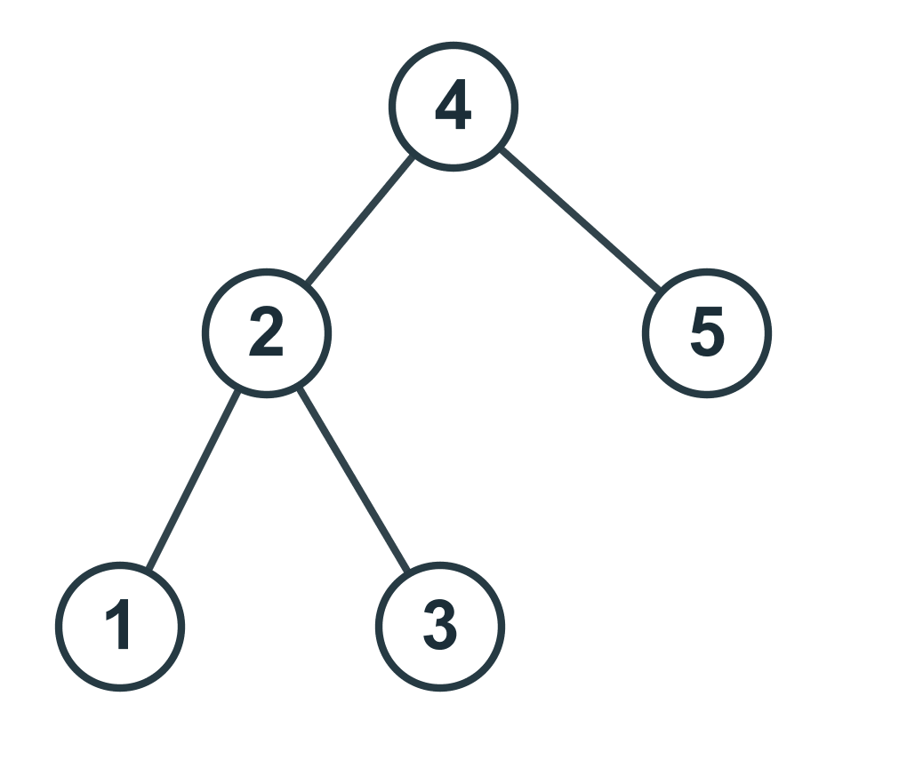
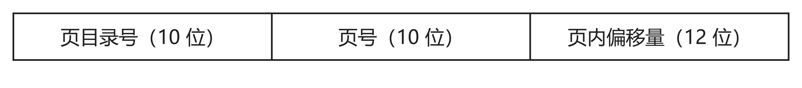

2020-01
数组和特殊矩阵将一个 10×10 对称矩阵 M 的上三角部分的元素 mi,j（1≤ i≤ j≤10）按列优先存入 C 语言的一维数组 N 中，元素 m7,2 在 N 中的下标是（ ）。
答案：C
本题讲解：对称矩阵上三角按列优先的下标计算
答案：C。三步走：对称换位 → 前面列数累加 → 列内定位后减 1。
第一步：先处理"下三角元素" m[7,2]
上三角存储只存满足 i≤j 的元素，而 m[7,2] 中 7>2，属于下三角、根本没被存放。利用对称性 m[7,2] = m[2,7]，问题变成：上三角中 m[2,7] 存在 N 的哪个位置。
第二步：数清 m[2,7] 前面有多少个元素
按列优先存储，第 j 列存 m[1,j], m[2,j], …, m[j,j]，共 j 个元素：
| 列号 | 1 | 2 | 3 | 4 | 5 | 6 | 7 |
|---|---|---|---|---|---|---|---|
| 该列元素个数 | 1 | 2 | 3 | 4 | 5 | 6 | 7 |
第 7 列之前共 1+2+3+4+5+6 = 21 个元素；第 7 列内依次存放 m[1,7]、m[2,7]、…，m[2,7] 是该列第 2 个。所以 m[2,7] 是按存储顺序的第 21+2 = 23 个元素。
第三步：换算成 C 语言下标
C 语言数组下标从 0 开始：第 23 个元素的下标 = 23 − 1 = 22，选 C。
易错点
- 忘记对称转换：直接按 m[7,2] 去找位置——下三角元素必须先换成 m[j,i] 再定位。
- 忘记 C 语言下标从 0 开始：算出"第 23 个"就直接选 23，掉进干扰项 D。
- 按行优先去数：题目明确"按列优先"，每列元素个数随列号增长，别套行优先的公式。
口诀：下三角对称换位 → 前面各列累加 → 列内定位 → 最后统一减 1。
2020-02
栈对空栈 S 进行 Push 和 Pop 操作，入栈序列为 a, b, c, d, e，经过 Push, Push, Pop, Push, Pop, Push, Push, Pop 操作后得到的出栈序列是（ ）。
答案：D
本题讲解：入栈出栈混合操作的逐步模拟
答案：D（出栈序列 b, c, e）。栈的核心规则只有一条：后进先出，Pop 永远弹栈顶。
第一步：认清操作序列
对空栈依次执行 Push, Push, Pop, Push, Pop, Push, Push, Pop，入栈序列为 a, b, c, d, e。Push 只会取入栈序列的下一个元素压栈，Pop 只看当前栈顶——操作顺序固定，不能跳过也不能重排。
第二步：逐步模拟
| 步骤 | 操作 | 栈内（底→顶） | 出栈 |
|---|---|---|---|
| 1 | Push | a | — |
| 2 | Push | a, b | — |
| 3 | Pop | a | b |
| 4 | Push | a, c | — |
| 5 | Pop | a | c |
| 6 | Push | a, d | — |
| 7 | Push | a, d, e | — |
| 8 | Pop | a, d | e |
第三步：读出结果
三次 Pop 依次弹出 b、c、e，出栈序列 = b, c, e，选 D。操作结束后 a、d 仍留在栈中，不会出现在出栈序列里。
易错点
- Pop 弹错对象：第 3 步 Pop 弹的是刚入栈的 b 而不是 a——栈顶才是唯一出口。
- 把留在栈里的元素写进出序列：d 第 6 步入栈后一直被 e 压着，第 8 步弹出的是 e。
- 倒推凑答案：不是先想好出栈序列再凑操作，而是严格按给定操作顺序执行一遍。
一句话：Push 按序进、Pop 只看顶，模拟一遍就出答案。
2020-03
二叉树的概念对于任意一棵高度为 5 且有 10 个结点的二叉树，若采用顺序存储结构保存，每个结点占 1 个存储单元（仅存放结点的数据信息），则存放该二叉树需要的存储单元数量至少是（ ）。
答案：A
本题讲解：顺序存储"任意"二叉树要预留多少单元
答案：A（31 个存储单元）。关键在"任意"二字——数组必须装得下最坏情形的树形。
第一步：明确顺序存储规则
二叉树顺序存储按层序编号：根为 1 号，编号 i 的左、右孩子是 2i 与 2i+1。数组大小 = 本树用到的最大编号，空缺的编号也占单元。
第二步：最坏情形推演
高度为 5 的二叉树，深度 5 的结点编号在 16 到 31 之间。"任意一棵"意味着树形未知，必须按最坏情况预留：结点可以全部挂在最右链上，编号 1→3→7→15→31，深度 5 由 31 号达成；其余 5 个结点补在已有结点的孩子位置，如 2、6、12、13、30。此时 10 个结点的最大编号达到 31。
第三步：排除"想当然"的最小值
若这棵树恰好结点尽量靠左（编号 1~9 加 16 号），16 个单元确实够——但这只对"某一棵"特定的树成立，不满足"任意一棵"。所以必须预留 31 个单元，选 A。
易错点
- 选 16（干扰项 B）：把"构造得出的最省树形"当成答案，忽略了"任意"按最坏树形预留的要求。
- 选 10（干扰项 D）：以为只存 10 个结点本身——顺序存储里空缺编号同样占单元。
- 31 的来源模糊：高度 5 的编号上界是 2 的 5 次方减 1 = 31，最坏情形恰好用满整个编号区间。
关键词敏感度：见到"任意一棵（高度 h）"，一律按最坏树形算到编号上界 2 的 h 次方减 1。
2020-04
二叉树的遍历和线索二叉树树森林已知森林 F 及与之对应的二叉树 T，若 F 的先根遍历序列是 a, b, c, d, e, f，中根遍历序列是 b, a, d, f, e, c，则 T 的后根遍历序列是（ ）。
答案：C
本题讲解：森林与二叉树遍历的对应 + 由两序重建二叉树求后序
答案：C（T 的后根遍历 = b, f, e, d, c, a）。
第一步：先立机制——森林是怎么变成二叉树的
森林转二叉树用孩子—兄弟表示法：每个结点的第一个孩子改为它的左孩子，兄弟依次链成右链；各棵树的根互为兄弟，第一棵树的根是二叉树根。在这个结构里"左子树 = 孩子们、右子树 = 兄弟们"，两种遍历因此严丝合缝：
- 二叉树先序（根→左→右）：访问根 → 走"孩子们"（= 该树按先根长出各子树）→ 走"兄弟们"（= 后面的树按先根）→ 恰是森林的先根遍历；
- 二叉树中序（左→根→右）：先走完"孩子们"，再访问根，再走"兄弟们"（每棵树先诸子树、后树根，再下一棵树）→ 恰是森林的中根遍历。
所以 T：先序 = a b c d e f，中序 = b a d f e c，不用真把森林画出来。
第二步：先序定根、中序分左右，递归重建 T
为什么两序能定树？先序永远最先访问根，所以先序段第一个字符必是根；中序是"左→根→右"，根在中序段里把序列切成左右两半。每递归一次规模缩小一层：
- 先序第一个 a 是根；中序里 a 左侧 {b} 是左子树，右侧 {d, f, e, c} 是右子树。
- 左子树：先序 b、中序 b → b 是 a 的左孩子（叶子）。
- 右子树：先序 c d e f、中序 d f e c → 根 c；c 在中序段末尾 → c 无右孩子。
- c 的左子树：先序 d e f、中序 d f e → 根 d；d 左侧为空 → d 无左孩子，{f, e} 是 d 的右子树。
- 先序 e f、中序 f e → 根 e，左孩子 f（叶子），无右孩子。
树形：a 左 b、右 c；c→d→e→f 为方向交替的单链（c 的左、d 的右、e 的左）。
第三步：左→右→根，写出后序
b（a 的整棵左子树）→ 右子树里先走最深的 f、e、d → 输出 c → 最后根 a。后序 = b, f, e, d, c, a，选 C。
易错点
- 对应关系记反 → 误选 A：A 正是 F 的中根序列原样；先根↔先序、中根↔中序，森林的后根才对应二叉树的中序。
- 单链方向画错 → 误选 D：c 只有左孩子 d、d 只有右孩子 e、e 只有左孩子 f，方向一错后序就倒。
- 定根/切分次序乱 → 误选 B：每次递归都要先在先序段取第一个字符作根，再回中序段切左右。
记忆：对应关系来自孩子—兄弟表示；重建靠"先序定根、中序分左右"；后序 = 左→右→根。
2020-05
树形查找下列给定的关键字输入序列中，不能生成如下二叉排序树的是（ ）。

答案：B
本题讲解：二叉排序树的插入序列判定
答案：B。判定方法：把每个序列逐个插入空 BST，落点与目标树结构矛盾即失败。
第一步：明确目标树与插入规则
目标 BST：根 4，左孩子 2（孩子 1、3），右孩子 5。插入规则：小于当前结点沿左走、大于沿右走，落在空位成为叶子；BST 插入只增不删，已形成的父子关系不会再变。
第二步：模拟干扰项 B（4, 5, 1, 2, 3）
| 插入 | 路径与落点 | 与目标树对比 |
|---|---|---|
| 4 | 作根 | 一致 |
| 5 | 5>4 → 4 的右孩子 | 一致 |
| 1 | 1 小于 4 → 4 的左孩子 | 目标中 4 的左孩子应是 2，暂记疑点 |
| 2 | 2 小于 4 进左子树，2 大于 1 → 1 的右孩子 | 与目标结构矛盾 |
矛盾在插 2 时暴露：2 只能落在 1 的右孩子上，而目标树中 1 是 2 的左孩子。无论后面怎么插，结构都无法再变，序列 B 不能生成目标树。
第三步：验证其余选项
A（4,5,2,1,3）：2 成为 4 的左孩子，1、3 再挂到 2 下，正确；C（4,2,5,3,1）：1、3 依次挂到 2 左右，正确；D（4,2,1,3,5）：正确。故不能生成的是 B。
易错点
- 只比元素集合：四个选项元素完全相同，差别全在插入次序。
- 提前下结论：插 1 时还没有矛盾（BST 允许暂时"空着"），要以"落点不对"为准。
- 以为树能调整：普通 BST 插入不旋转、不重排，树形由序列唯一决定。
技巧：先看第二个元素落在根的哪一侧，再逐个核对落点，第一个出错的插入就是答案。
2020-06
图的遍历图的应用修改递归方式实现的图的深度优先搜索（DFS）算法，将输出（访问）顶点信息的语句移到退出递归前（即执行输出语句后立刻退出递归）。采用修改后的算法遍历有向无环图 G，若输出结果中包含 G 中的全部顶点，则输出的顶点序列是 G 的（ ）。
答案：B
本题讲解：DFS 退出递归时输出 ⇒ 逆拓扑序列
答案：B（逆拓扑有序序列）。核心推理：顶点的输出被推迟到"所有邻接点递归返回之后"。
第一步：看清"修改"改变了什么
递归 DFS 原本在第一次到达顶点时输出；修改后移到退出递归前输出——顶点 v 要等它所有邻接点的递归都返回后才被输出。
第二步：推理输出顺序
对有向无环图的任意一条边 v→w：从 v 出发必先递归访问 w；因为图中无环，w 的递归不会绕回 v，所以 w 比 v 先退出递归。于是只要输出包含全部顶点，每条边都满足 w 排在 v 前面。
第三步：对号入座
拓扑序要求 v→w 时 v 排在 w 前，现在恰好相反——输出序列是逆拓扑有序序列，选 B。顺带记住经典结论：DFS 退出序取反（逆序输出）即得拓扑序。
易错点
- 选 A（拓扑序）：把边指向的方向想反了，退出递归序天然是"反"的。
- 选 D（DFS 序列）：输出时机变了，得到的不再是标准 DFS 序列。
- 忽略"有向无环"前提：有环时退出序不构成任何拓扑序，无环是推理成立的关键。
记忆锚点：DFS 退出时输出 = 逆拓扑；把退出序反过来打印 = 拓扑序。
2020-07
图的应用已知无向图 G 如下所示，使用克鲁斯卡尔（Kruskal）算法求图 G 的最小生成树，加到最小生成树中的边依次是（ ）。

答案：A
本题讲解：克鲁斯卡尔算法按权选边求最小生成树
答案：A。Kruskal 的流程固定：边按权从小到大排序 → 依次考察，不成环就加入 → 选满 n−1 条边。
第一步：把边按权排序
图中各边从小到大：(b,f)=5，(b,d)=6，(d,f)=7，(a,e)=9，(c,e)=10，(b,e)=11，(a,c)=12，(e,d)=14，(c,d)=18，(a,b)=20。共 6 个顶点，需选 5 条边。
第二步：逐边考察
| 考察边 | 权 | 判定 | 连通分量变化 |
|---|---|---|---|
| (b,f) | 5 | 加入 | {b,f} |
| (b,d) | 6 | 加入 | {b,d,f} |
| (d,f) | 7 | 舍弃（d、f 已连通，成环） | 不变 |
| (a,e) | 9 | 加入 | {a,e} |
| (c,e) | 10 | 加入 | {a,c,e} |
| (b,e) | 11 | 加入，连通两大分量 | 全部 6 顶点 |
已选满 5 条边，最小生成树完成。
第三步：按加入顺序读答案
依次加入的边是 (b,f), (b,d), (a,e), (c,e), (b,e)，选 A。总权值 5+6+9+10+11 = 41。
易错点
- 选 B：边集一样但顺序错——(b,e) 权 11 大于 (a,e) 的 9 和 (c,e) 的 10，必须后加入。
- 漏算 (d,f)=7：它排在 (a,e) 之前，虽因成环被舍弃，也要占一个"考察位"，不能跳过。
- Prim 与 Kruskal 混淆：Prim 从顶点扩展、次序依赖起点；Kruskal 全局按权排序，加入顺序可预测。
口诀：先排序、后选边、成环就丢、五条收工。
2020-08
图的应用若使用AOE网估算工程进度，则下列叙述中正确的是（ ）。
答案：B
本题讲解：AOE 网与关键路径的定义辨析
答案：B（关键路径 = 从源点到汇点路径长度最长的路径）。
第一步：先立机制——工期为什么由"最长链"决定
AOE 网用有向边表示活动（边上的权 = 活动持续时间），结点表示事件（活动开始/结束的状态）。工程从源点推进到汇点：一个事件要等它所有入边活动都完成才能发生，汇点发生 = 全部活动完工 = 工程结束。从源点到汇点的任一条路径上，活动首尾相接、串行推进，这条链各边权之和（即"路径长度"）就是只走这条链需要的完工时间；比它短的链上的活动做完后只能闲等最长链走完。所以工期 = 最长链的长度，这条最长链就是关键路径——"关键"指它拖住整个工期，与边数多少无关。
第二步：用机制逐项排除
- A 错：比的是权之和最长，不是边数最多——边数多但每边极短，总长照样短。
- B 对：正是定义，"路径长度" = 路径上各活动持续时间之和。
- C 错：关键活动在最长链上，延长它，最长链直接变长，工期必然延长。
- D 错（"任一……将会"太绝对）：若存在多条关键路径，只缩短其中一条，工期由另一条决定，未必缩短；且关键活动有极限工期，压缩过头关键路径会转移。
易错点
- 望文生义选 A："关键"不等于"边多"，比的是耗时总和。
- 对 C 掉以轻心：关键活动延误，最长链变长，工期就延。
- 对 D 绝对化：多关键路径下缩短单条，不改变"最长"的归属。
记忆锚点：工期 = 最长活动链的长度；增关键活动必延工，减关键活动未必省工。
2020-09
选择排序下列关于大根堆（至少含2个元素）的叙述中，正确的是（ ）。
I. 可以将堆视为一棵完全二叉树
II. 可以采用顺序存储方式保存堆
III. 可以将堆视为一棵二叉排序树
IV. 堆中的次大值一定在根的下一层
答案：C
本题讲解：大根堆性质逐条判定
答案：C（仅 I、II 和 IV 正确）。堆 = 完全二叉树形态 + 父结点 ≥ 孩子。
第一步：回顾堆的本质
大根堆按完全二叉树的层序存放，且每个结点的值不小于其左右孩子。注意：堆只约束"父子"，不约束左右孩子之间的大小。
第二步：逐条判定
| 命题 | 判断 | 理由 |
|---|---|---|
| I 可视为完全二叉树 | 对 | 堆本来就按完全二叉树的形态定义 |
| II 可顺序存储 | 对 | 完全二叉树层序编号连续，正好装进数组不浪费 |
| III 可视为二叉排序树 | 错 | BST 要求左小于根小于右；堆的左右孩子无大小约束，如 9 的左 6 右 5 与左 5 右 6 都是堆，中序不单调 |
| IV 次大值一定在根的下一层 | 对 | 次大值只败给最大值；若它深度≥2，其父结点（非根）≥它，与"次大"矛盾，故只能是根的孩子 |
第三步：组合出答案
I、II、IV 正确，III 错误，选 C。
易错点
- 把堆当 BST（误认 III 对）：堆是"上下比大小"，BST 是"左中小、右大"，维度不同。
- 对 IV 拿不准：用"父 ≥ 孩子"反证即可——次大值不可能藏到深度 2 及更深。
- 忘记左右无序：由"左右无序"立刻推出 III 错、中序遍历得不到有序序列。
记忆锚点：堆 = 完全二叉树 + 父≥子；次大值必是根的孩子，第三大的才可能在更深层。
2020-10
B树和B+树依次将关键字5,6,9,13,8,2,12,15插入初始为空的4阶B树后，根结点中包含的关键字是（ ）。
答案：B
本题讲解：4 阶 B 树插入与结点分裂
答案：B（最终根结点包含关键字 6, 9）。
第一步：先立机制——B 树为什么这样插入、这样分裂
m 阶 B 树每结点至多 m−1 个关键字（4 阶 = 至多 3 个），根以外结点至少 ⌈m/2⌉−1 = 1 个。两条机制决定本题走向：
- 为什么新关键字总先插到叶结点：B 树要求所有叶子同层，平衡靠"自底向上分裂"维持。若插进中间结点，该结点的子树数增加，叶子同层就被破坏；插在叶上、满了才向上分裂，树只在根部"长高"，平衡不破。
- 为什么分裂上移第 ⌈m/2⌉ = 2 个关键字：溢出结点有 4 个关键字，从中劈开、把第 2 个上移父结点后，左结点剩 1 个、右结点剩 2 个——两侧都 ≥ 下限 1。取别的位置，必有一侧一个关键字都不剩，违反 B 树定义。
第二步：逐个插入推演
| 插入 | 过程 | 当前结构 |
|---|---|---|
| 5, 6, 9 | 依次入根 | 根 [5, 6, 9] |
| 13 | 根达 4 个，分裂：第 2 个 6 上移 | 根 [6]，孩子 [5]、[9, 13] |
| 8 | 8>6 → 右叶 | 右叶 [8, 9, 13] |
| 2 | 2<6 → 左叶 | 左叶 [2, 5] |
| 12 | 右叶达 4 个，分裂：9 上移 | 根 [6, 9]，孩子 [2, 5]、[8]、[12, 13] |
| 15 | 落入最右叶 | 最右叶 [12, 13, 15] |
第三步：读根结点
8 个关键字插完，根结点是 [6, 9]，选 B。
易错点
- 分裂点取错 → 得到根 [5, 9] 之类的错误结构：上移的是第 ⌈m/2⌉ 个，它保证分裂后两侧都达下限。
- 把 B 树当 BST 插 → 以为新关键字可插进上层：B 树总是先落叶、再自底向上分裂。
- 中途结构记错 → 分裂只动溢出结点与其父结点，其余分支不变，逐步列表最稳。
记忆锚点：m 阶 B 树结点至多 m−1 个关键字；分裂取第 ⌈m/2⌉ 个上移，恰好让两侧都 ≥ ⌈m/2⌉−1。
2020-11
各种内部排序算法的比较及应用对大部分元素已有序的数组进行排序时，直接插入排序比简单选择排序效率更高，其原因是（ ）。
I. 直接插入排序过程中元素之间的比较次数更少
II. 直接插入排序过程中所需要的辅助空间更少
III. 直接插入排序过程中元素的移动次数更少
答案：A
本题讲解：基本有序时插入排序为何比选择排序快
答案：A（仅 I 正确）。原因要落到"比较次数"上。
第一步：抓住场景特点
"大部分元素已有序"意味着逆序对很少。两类排序的开销结构不同：插入排序的代价随逆序对减少而下降；简单选择排序的代价与初始状态完全无关。
第二步：逐条判断
| 命题 | 判断 | 理由 |
|---|---|---|
| I 比较次数更少 | 对 | 选择排序固定比较 n(n−1)/2 次；插入排序基本有序时每趟比几次就到位，总量接近 O(n) |
| II 辅助空间更少 | 错 | 两者辅助空间都是 O(1)，一样多 |
| III 移动次数更少 | 错 | 插入排序每趟至少"暂存 + 放回"2 次移动；选择排序只在真需要交换时移动，基本有序时常常 0 次交换，移动未必更多 |
第三步：组合出答案
只有 I 成立，选 A。
易错点
- 想当然选 D：觉得"插入排序全面更优"——移动次数上反例明显：完全有序数组，插入排序仍要约 2(n−1) 次移动，选择排序 0 次交换。
- 混淆两种"次数"：比较次数看逆序对（插入占优），移动次数看交换结构（选择排序上限反而低）。
- 辅助空间记错：二者都是 O(1)，不存在谁更省。
记忆锚点：基本有序时，插入排序省的是"比较"，不是空间、也未必是移动。
2020-12
计算机的性能指标CPU的功能和基本结构下列给出的部件中，其位数（宽度）一定与机器字长相同的是（ ）。
I. ALU
II. 指令寄存器
III. 通用寄存器
IV. 浮点寄存器
答案：B
本题讲解：哪些部件的位数一定与机器字长相同
答案：B（一定与机器字长相同的是 ALU 和通用寄存器）。
第一步：明确"机器字长"
机器字长指 CPU 一次能处理的二进制数据的位数，通常等于 CPU 内部定点运算的数据通路宽度。判断标准只有一个：这个部件一次处理的"一个数据"是不是一个机器字。注意题干里的"一定"二字——只要能举出反例，就不算。
第二步：逐个部件核对
| 部件 | 位数由什么决定 | 是否一定等于机器字长 |
|---|---|---|
| I. ALU | 一次定点运算的处理宽度 | 是 |
| II. 指令寄存器 IR | 指令字长（指令的长度） | 否 |
| III. 通用寄存器 | 存放一个机器字的操作数 | 是 |
| IV. 浮点寄存器 | 浮点数格式（如 64 位、80 位） | 否 |
- ALU：定点运算的核心部件，一次处理一个机器字，输入输出宽度与机器字长相同。
- 指令寄存器：存放当前指令，位数等于指令字长；指令字长可以与机器字长不同（如 32 位机上放 16 位指令、变长指令系统），所以"一定相同"不成立。
- 通用寄存器：位数就是机器字长，否则无法一次存放一个机器字的操作数。
- 浮点寄存器：按浮点数格式设计，常见 64 位/80 位，与机器字长无关。
易错点
- 把指令字长与机器字长混为一谈：IR 的位数跟着指令走，这是选项 A、C、D 的误判来源。
- 忽略浮点寄存器：浮点寄存器位数通常大于机器字长，误把它算进去会错选 D。
记忆锚点：与"定点数"打交道的部件（ALU、通用寄存器）跟机器字长一致；与"指令"（IR）和"浮点数"（浮点寄存器）打交道的部件不必一致。
2020-13
数制与编码浮点数的表示与运算已知带符号整数用补码表示，float型数据用IEEE 754标准表示，假定变量x的类型只可能是int或float，当x的机器数为C800 0000H时，x的值可能是（ ）。
答案：A
本题讲解：同一个机器数 C800 0000H 的两种身份
答案：A。x 按 int（补码）解释时为 −7×227。
第一步：先立机制——机器数只是"位串"，值取决于解释方式
32 位串 C800 0000H 本身没有正负属性：按 int 读，它是补码（模运算记数）；按 float 读，它是 IEEE 754 三段式。同一串位算两遍，再看哪个选项接得住。
第二步：按 int（补码）读
补码的机制：n 位串按无符号读出的值 v，代表的是 v mod 2n 这个同余类；最高位为 1 时，取区间 [−231, 231) 里的代表元作真值，即 真值 = v − 232。为什么可以减模？减去一次模不改变同余类，只是把代表元换到负数区间。C800 0000H 无符号值 3355443200，减 232 得 −939524096 = −7×227（用"取反加一"印证：数值部分变为 3800 0000H = 7×227，取负，两条路必然一致）。恰是选项 A。
第三步：按 float（IEEE 754）读
把 32 位切成三段：数符 1 位 = 1；阶码 8 位 = 1001 0000B = 144；尾数 23 位全 0。
- 为什么阶码要减 127：阶码字段存的是"真实指数 + 127"（移码），好让硬件按无符号数直接比大小；真指数 = 144 − 127 = 17。
- 为什么尾数全 0 还要隐含 1：规格化要求有效数字形如 1.xxxxx，二进制下最高位恒为 1，干脆不存、省出一位精度——所以有效数字 = 1.0。
- x = (−1) × 1.0 × 217 = −217。
| 解释方式 | 读出的值 | 对应选项 |
|---|---|---|
| int（补码） | −7×227 | A |
| float（IEEE 754） | −217 | 无（B 是 −216） |
四个选项里只有 A 接得住：B 与 float 结果差一个 2 的幂；C、D 是正数，与最高位为 1 矛盾。
易错点
- 漏掉偏置 127：144 是"真实指数+127"，不减会得 2144。
- 漏掉隐含前导 1：尾数全 0 时有效数字是 1.0，不是 0。
- 把 −217 误选成 B：B 写的是 −216，阶码差 1。
- 忘记数符：C、D 都是正数，与符号位 1 直接矛盾。
同一个 32 位串，按 int 读出 −7×227，按 float 读出 −217；四个选项里只有 A 对得上。
2020-14
浮点数的表示与运算在按字节编址，采用小端方式的32位计算机中，按边界对齐方式为以下C语言结构型变量a分配存储空间：
struct record {
short x1;
int x2;
} a;若a的首地址为2020 FE00H，a的成员变量x2的机器数为1234 0000H，则其中34H所在存储单元的地址是（ ）。
答案：D
本题讲解：结构体边界对齐 + 小端方式定位字节
答案：D（34H 所在单元地址为 2020 FE06H）。
第一步：先立机制——为什么要对齐、小端是什么
边界对齐的硬件根源：CPU 访存按固定宽度（这里 int 按 4 字节整字边界）取数，成员起始地址落在对齐倍数上时，一个总线周期就能取到完整数据；不齐则要拆成两次访存再拼接，有的机器干脆不支持。所以编译器给每个成员安排"起始地址 = 其长度的倍数"，空隙用填充字节补上——填充不是浪费，是给硬件提速。
小端方式的机制：多字节数要拆成字节序列存放，小端规定最低有效字节（LSB）放最低地址——正好与 2019-15 讲过的大端相反（大端 = MSB 在低地址，LSB 落在 EA+字节数−1）。机器数 1234 0000H 按书写顺序是 12、34、00、00 四个字节，12 是最高有效字节，末尾的 00 是 LSB。
第二步：按对齐规则排地址
x1 是 short（2B），占偏移 0~1；x2 是 int（4B），起始地址必须是 4 的倍数——紧接偏移 2 的 2020 FE02H 不是 4 的倍数，编译器填充 2 字节，x2 从偏移 4（2020 FE04H）开始。
| 成员 | 类型 | 占用地址 |
|---|---|---|
| x1 | short（2B） | 2020 FE00H ~ FE01H |
| 填充 | — | 2020 FE02H ~ FE03H |
| x2 | int（4B） | 2020 FE04H ~ FE07H |
第三步：按小端把 34H 放进 x2 的四个单元
低位字节放低地址，从 FE04H 起依次放 00、00、34、12，34H 落在 2020 FE06H，选 D。
易错点
- 忘记对齐填充 → 让 x2 从 FE02H 直接开始，34H 会被算到 FE04H（误选 B）。
- 大小端弄反 → 按大端存，12H 在 FE04H、34H 在 FE05H（误选 C）。
- 忽略 int 的对齐要求：int 占 4B，起始地址必须是 4 的倍数。
先对齐排地址，再按"低位在低地址"倒着放：00、00、34、12 依次进 FE04H～FE07H，34H 在 2020 FE06H。
2020-15
主存储器高速缓冲存储器虚拟存储器下列关于TLB和Cache的叙述中，错误的是（ ）。
答案：D
本题讲解：TLB 与 Cache 的异同（找错误项）
答案：D（错误项是"都由 DRAM 存储器组成"）。
第一步：把握两者的关系
TLB（快表）是页表项的高速缓存，Cache 是主存数据块的高速缓存——两者机制同源：都利用程序局部性、都可能有缺失、缺失都要付出访问主存的代价。
第二步：逐项核对
| 选项 | 叙述 | 判断 | 依据 |
|---|---|---|---|
| A | 命中率都与程序局部性有关 | 正确 | 时间/空间局部性决定两者命中率 |
| B | 缺失后都需要去访问主存 | 正确 | TLB 缺失去主存查页表；Cache 缺失去主存取块 |
| C | 缺失处理都可以由硬件实现 | 正确 | 两者缺失都由硬件完成，否则速度优势荡然无存 |
| D | 都由 DRAM 存储器组成 | 错误 | 两者都要快，用 SRAM；DRAM 慢，用于主存 |
易错点
- 以为 TLB 是主存的一部分：TLB 是集成在 MMU 内的小型高速部件，用 SRAM 实现。
- 混淆 DRAM 与 SRAM：DRAM 靠电容存储、需要刷新、便宜但慢，用来做主存；SRAM 快而贵，用来做 Cache 和 TLB。
TLB 和 Cache 都是"用 SRAM 堆出来的加速器"；D 错在把它们的材质说成了主存用的 DRAM。
2020-16
指令系统指令的寻址方式某计算机采用16位定长指令字格式，操作码位数和寻址方式位数固定，指令系统有48条指令，支持直接、间接、立即、相对4种寻址方式。单地址指令中，直接寻址方式的可寻址范围是（ ）。
答案：A
本题讲解：16 位定长指令的位段划分与直接寻址范围
答案：A（直接寻址范围 0～255）。
第一步：先立机制——指令字如何切位段
16 位定长指令字像一张固定格式的表格，从高位到低位切成操作码 | 寻址方式 | 地址码三段。题设"操作码位数和寻址方式位数固定"，意味着这三段的切法对所有指令一致，单地址指令的地址码位数 = 16 − 操作码位数 − 寻址方式位数，不能再多也不能再少。
第二步：把位数账算清
- 操作码：要给 48 条指令各一个唯一编号。5 位只有 25 = 32 个编码，装不下；6 位有 64 个，够用 → 6 位。
- 寻址方式：4 种 → 22 = 4 个编码 → 2 位。
- 地址码：16 − 6 − 2 = 8 位。
| 字段 | 需求 | 位数 |
|---|---|---|
| 操作码 | 32 < 48 ≤ 64 | 6 |
| 寻址方式 | 4 种 | 2 |
| 地址码 | 16 − 6 − 2 | 8 |
第三步：直接寻址为什么是 0～255
直接寻址时，地址码字段本身就是主存单元的地址——地址是"门牌号"，没有正负、不参与符号运算，按无符号数解释：0000 0000B ～ 1111 1111B，即 0～255，选 A。
为什么不是补码范围 −128～127：那是"带符号数"的口径，适用于立即数或相对寻址的偏移量（选项 C 正是拿它设的陷阱）；地址码只表达"去哪个单元"，不存在负地址。
易错点
- 操作码位数算少 → 以为 5 位够：25 = 32 < 48，必须 6 位。
- 把补码范围当寻址范围 → 误选 C：−128～127 是立即数/相对偏移的口径，不是地址。
- 位数算错 → 0～1023 需要 10 位地址码（B）、−512～511 是 10 位补码（D），8 位都给不出来。
位数账：6（操作码）+ 2（寻址方式）+ 8（地址码）= 16，直接寻址 = 地址码按无符号解释，0～255。
2020-17
计算机的性能指标指令执行过程指令流水线下列给出的处理器类型中，理想情况下，CPI为1的是（ ）。
I. 单周期CPU
II. 多周期CPU
III. 基本流水线CPU
IV. 超标量流水线CPU
答案：B
本题讲解：理想情况下 CPI 为 1 的处理器
答案：B（单周期 CPU 与基本流水线 CPU）。
第一步：先立机制——CPI 数的是"完成节奏"，不是"单条指令耗时"
CPI = 执行一条指令所需的平均时钟周期数，衡量的是稳态下平均每拍完成几条指令。判断四个处理器，关键看一件事：指令之间是否重叠执行。"理想情况"指不考虑流水线冒险、访存停顿等损失，只看处理器结构本身。
第二步：逐个处理器核对（核心是流水线那条）
- I 单周期 CPU：把数据通路拉长到一个时钟周期里，取指到写回一气呵成，一拍恰好完成一条 → CPI = 1（代价是时钟周期很长）。
- II 多周期 CPU：一条指令拆成多拍逐阶段走，任何时刻只有一条指令在推进，阶段之间不重叠 → 一条指令占多拍，CPI > 1。
- III 基本流水线 CPU：把处理过程分成若干阶段，不同指令的各阶段重叠在不同硬件上。这正是最容易被追问的点——"流水线里一条指令不也要走好几拍吗？为什么 CPI 还是 1？"因为流水线装满后每个时钟周期都有一条指令流出：单条指令的耗时没变，但完成节奏变成每拍一条，按完成节奏算 CPI = 1。
- IV 超标量流水线 CPU：多条流水线并行发射，一拍流出多条指令 → CPI < 1，是"优于 1"而不是"等于 1"。
| 处理器 | 是否重叠 | 理想 CPI |
|---|---|---|
| 单周期 | 一拍全做完 | 1 |
| 多周期 | 一条占多拍 | >1 |
| 基本流水线 | 稳态每拍流出一条 | 1 |
| 超标量 | 并行发射多条 | <1 |
CPI 恰好为 1 的是 I 和 III，选 B。
易错点
- 把超标量也算成 1 → 误选 D：一拍多条，CPI < 1。
- 把多周期当成 1 → 误选 A、C：每条指令要经历多个周期，CPI > 1。
- 误以为流水线 CPI = 阶段数：阶段数影响单条指令耗时与时钟周期长短，稳态完成节奏仍是每拍一条。
单周期"一拍做完一条"，基本流水线"一拍流出一条"，两者理想 CPI 都是 1；多周期一条占多拍，超标量一拍多条。
2020-18
异常和中断机制下列关于“自陷”（Trap，也称陷阱）的叙述中，错误的是（ ）。
答案：A
本题讲解：自陷（Trap）的性质（找错误项）
答案：A（错误项是"自陷是通过陷阱指令预先设定的一类外部中断事件"）。
第一步：给事件分好类
- 外部中断：由 CPU 外部的设备（时钟、I/O 接口、网卡等）随时发出，与当前执行的指令无关。
- 内部异常：由 CPU 内部、与某条指令相关的事件引起，分为故障（Fault）、自陷（Trap）、终止（Abort）。
自陷属于内部异常：由程序员用陷阱指令在程序中预先安排（如系统调用入口、断点指令），触发者是"指令"而不是外部设备。
第二步：逐项核对
- A（错误）：说自陷是"外部中断事件"，类别就搞错了——自陷确实由陷阱指令预先设定，但它是程序内部安排的异常，与外部设备无关，对应的就是本题要找的错误项。
- B（正确）：断点设置（断点指令）和单步跟踪正是利用陷阱机制实现的。
- C（正确）：自陷发生后，CPU 转去执行操作系统内核的相应处理程序。
- D（正确）：陷阱指令本身已经执行完毕才触发自陷，处理完成后返回陷阱指令的下一条指令继续执行。
易错点
- 把自陷当外部中断：这正是选项 A 的错误所在；判断依据是"事件由谁引发"。
- 与故障（Fault）混淆：故障（如缺页）处理完成后返回"当前"指令重新执行；自陷处理完成后返回"下一条"指令。
自陷是"程序里预先埋好的钩子"，属于内部异常；敲门的才是外部中断，埋钩子的（陷阱指令）是内部异常。
2020-19
总线概述QPI总线是一种点对点全工同步串行总线，总线上的设备可同时接收和发送信息，每个方向可同时传输20位信息（16位数据+4位校验位），每个QPI数据包有80位信息，分2个时钟周期传送，每个时钟周期传递2次。因此，QPI总线带宽为：每秒传送次数×2B×2。若QPI时钟频率为2.4GHz，则总线带宽为（ ）。
答案：C
本题讲解：QPI 总线带宽计算
答案：C（19.2GBps）。
第一步：拆开带宽公式
题目已给口径：带宽 = 每秒传送次数 × 2B × 2。三个因子各有来历：
- 2B：每个方向每次传送 20 位 = 16 位数据 + 4 位校验，有效数据 16 位 = 2B（校验位不计入带宽）；
- 每秒传送次数：时钟频率 2.4GHz，每个时钟周期传送 2 次，所以每秒传送 2.4G × 2 = 4.8G 次；
- ×2：点对点全工总线，收发同时进行，两个方向各算一份。
第二步：代入计算
| 步骤 | 算式 | 结果 |
|---|---|---|
| 每秒传送次数 | 2.4G × 2 | 4.8G 次/秒 |
| 单方向带宽 | 4.8G × 2B | 9.6GB/s |
| 全工两方向 | 9.6 × 2 | 19.2GB/s |
易错点
- 两个 ×2 都漏掉：得 2.4G × 2B = 4.8GB/s，对应选项 A。
- 只漏一个 ×2：漏"每周期传 2 次"或漏"全工两方向"，都得到 9.6GB/s，对应选项 B。
- 多乘一个 2：把方向或次数重复计入，得到 38.4GB/s，对应选项 D。
- 把校验位当数据：20 位里有效数据只有 16 位（2B），另外 4 位是校验。
带宽 = 2.4G × 2 次 × 2B × 2 方向 = 19.2GB/s，选 C。
2020-20
异常和中断机制下列事件中，属于外部中断事件的是（ ）。
I. 访存时缺页
II. 定时器到时
III. 网络数据包到达
答案：C
本题讲解：哪些事件属于外部中断
答案：C（定时器到时、网络数据包到达）。
第一步：先分内外
- 外部中断：来自 CPU 以外的部件（定时器、I/O 接口、网卡等），由设备主动向 CPU 发出请求，与当前执行的指令无关。
- 内部异常：由指令执行本身引发（缺页、除 0、溢出、陷阱等）。
第二步：逐个事件判断
| 事件 | 来源 | 类别 |
|---|---|---|
| I. 访存时缺页 | 当前指令访存时发现页不在内存 | 内部异常（Fault） |
| II. 定时器到时 | CPU 外部的定时器芯片发出请求 | 外部中断 |
| III. 网络数据包到达 | CPU 外部的网卡发出请求 | 外部中断 |
II、III 是外部中断，选 C。
易错点
- 把缺页当外部中断：缺页虽然发生在访存、后续也要访问磁盘，但触发者是"执行中的指令"，不是设备发来的请求——对应选项 A、B、D。
- 只凭"涉及外设"判断：判断依据是"谁主动向 CPU 发请求"；缺页是 CPU 执行指令时自己发现的问题。
一条判据：事件由 CPU 外部设备主动发来（定时器、网卡）才是外部中断；由指令执行引发的是内部异常。
2020-21
异常和中断机制I/O方式外部中断包括不可屏蔽中断（NMI）和可屏蔽中断，下列关于外部中断的叙述中，错误的是（ ）。
答案：B
本题讲解：外部中断的响应条件（找错误项）
答案：B（错误项是"可屏蔽中断请求信号一旦有效，CPU 将立即响应"）。
第一步：理清 CPU 响应中断的条件
- 时机：CPU 在每条指令执行结束时才查询中断请求，不会在指令执行中途响应；
- 允许：对可屏蔽中断，还要求 CPU 处于开中断状态，且该请求没有被屏蔽字屏蔽；
- 优先级：有更紧急的请求（如 NMI）时先处理更紧急的。
NMI 是一条"特殊通道"：不受开/关中断约束，专为掉电等紧急事件保留。
第二步：逐项核对
- A（正确）：CPU 处于关中断状态时也能响应 NMI——NMI 不受中断允许标志约束。
- B（错误）：可屏蔽中断请求有效后，CPU 要等当前指令执行结束，且开中断、未被屏蔽时才响应，绝不会"立即"响应，本题选它。
- C（正确）：不可屏蔽中断的优先级比可屏蔽中断高。
- D（正确）：通过设置中断屏蔽字，可以动态改变可屏蔽中断的处理优先级（处理次序）。
易错点
- 以为请求一到 CPU 就放下手头指令：响应点固定在"每条指令执行结束"，对应选项 B。
- 以为关中断能挡住 NMI：关中断只屏蔽可屏蔽中断，NMI 照常响应，对应选项 A 的正确说法。
响应可屏蔽中断要过三道门：指令执行结束（时机）、开中断（允许）、未被屏蔽；NMI 只受"时机"约束。
2020-22
I/O方式若设备采用周期挪用DMA方式进行输入和输出，每次DMA传送的数据块大小为512字节，相应的I/O接口中有一个32位数数据缓冲寄存器。对于数据输入过程，下列叙述中，错误的是（ ）。
答案：C
本题讲解：周期挪用 DMA 的输入过程（找错误项）
答案：C（错误项是"在整个数据块的传送过程中，CPU 不可以访问主存储器"）。
第一步：算清传送次数
数据块 512B，I/O 接口中的数据缓冲寄存器 32 位（4B）：外设每给接口凑满 4B，DMA 控制器就发一次总线请求，挪用一个存取周期把这 4B 写入主存。整块共 512 ÷ 4 = 128 次请求、128 次挪用。选项 A 的叙述正确。
第二步：理解周期挪用的本质
DMA 与 CPU 共享主存总线。周期挪用方式下，DMA 只在"传一个数据"的那一个存取周期里占用总线（这一拍 CPU 暂停让路），其余时间 CPU 照常执行程序、照常访存。DMA 传一个数据的时间窗口很短，不马上挪用总线数据就可能被后续输入覆盖，所以 DMA 的总线使用权优先级高于 CPU（选项 B 正确）。而"整个传送过程中 CPU 不可以访存"是把"挪用一个周期"夸大成了"独占全程"，与周期挪用的定义矛盾（选项 C 错误）。数据块传完后，DMA 控制器向 CPU 发出"DMA 传送结束"中断请求，由 CPU 做后处理（选项 D 正确）。
易错点
- 与"停止 CPU 访存"方式混淆：那种方式下整块传送期间 CPU 完全停止访存，周期挪用不是这样——这正是 C 的错误根源。
- 忘记 32 位缓冲决定请求频率：每凑满 4B 就请求一次总线，共 128 次。
周期挪用 = "偷一个周期，还你全程"：挪用的那一拍 CPU 让路，其余时间 CPU 该干嘛干嘛，所以 C 错。
2020-23
文件系统基础若多个进程共享同一个文件F，则下列叙述中，正确的是（ ）。
答案：B
本题讲解：多进程共享一个文件时，两张打开文件表各管什么
答案：B。
第一步：厘清两张打开文件表的分工
- 系统打开文件表：全系统只有一张。每被打开的文件 F 占一个表项，存放 F 的属性（FCB 信息）、共享计数、读写函数入口等文件级信息。
- 进程（用户）打开文件表：每个进程一张。表项记录该进程自己打开 F 的方式（读/写）、读写指针等进程级信息，并用指针指向系统表中 F 的那个表项。
第二步：逐项判断
- A 错：打开方式由各进程自己决定，可以用"写"方式打开，共享并不等于只读。
- B 对：文件 F 在全系统只登记一次，系统打开文件表中仅有一个表项包含 F 的属性；其余进程都通过指针共享它，共享只是让该表项的引用计数加 1。
- C 错：各进程用户表表项记录各自的打开方式和读写指针，内容可以不同——这正是共享的意义之一。
- D 错：某进程关闭 F 时，系统表表项的共享计数减 1；计数减到 0 时系统才删除该表项，而不是一关闭就删。
易错点
- 误选 D：把"进程关闭"当成"文件关闭"。只有最后一个使用 F 的进程关闭后，系统表表项才被删除。
- 误选 C：用户表表项属于进程私有信息，不同进程打开方式、读写位置都允许不同。
一句话结论：文件级信息（属性）在系统打开文件表中全局唯一一份，进程级信息（打开方式、读写指针）在各自用户表中各留一份。选 B。
2020-24
文件系统基础下列选项中，支持文件长度可变、随机访问的磁盘存储空间分配方式是（ ）。
答案：A
本题讲解：哪种磁盘分配方式兼得"文件长度可变"与"随机访问"
答案：A。
第一步：明确两个衡量指标
- 随机访问：给定逻辑块号就能直接找到对应物理块，不必从头遍历。
- 文件长度可变：文件能动态增长、收缩，不需要预先预留大片连续空间。
第二步：逐项分析
- A 索引分配（对）：为文件建索引块，第 i 块的物理地址查索引表即得，支持随机访问；文件增长时往索引表追加一项即可，长度可变。两个指标同时满足。
- B 链接分配：块与块靠指针串联，访问第 i 块必须沿链逐块读盘，只能顺序访问，不满足"随机访问"。
- C 连续分配：由起始块号加偏移可随机访问，但文件必须占连续盘区，动态增长困难（可能整体搬移），不满足"长度可变"。
- D 动态分区分配：这是内存管理的分配方式，根本不属于磁盘存储空间的文件分配方式，直接排除。
易错点
- 误选 C：连续分配确实随机访问快，但"长度可变"不满足，恰是它的著名缺点。
- 误选 B：链接分配允许文件增长，但无法随机访问，两个条件只占一个。
一句话记忆：连续＝随机但不可变，链接＝可变但不可随机，索引＝又随机又可变。选 A。
2020-25
操作系统的运行环境下列与中断相关的操作中，由操作系统完成的是（ ）。
I. 保存被中断程序的中断点
II. 提供中断服务
III. 初始化中断向量表
IV. 保存中断屏蔽字
答案：D
本题讲解：中断处理中，哪些活是硬件干的、哪些是操作系统干的
答案：D（仅 II、III、IV）。
第一步：记住分界线——中断隐指令由硬件完成
响应中断时，硬件（中断隐指令）自动完成三件事：关中断、保存断点（被中断程序的中断点，如 PC）、引出中断服务程序入口。因此 I"保存被中断程序的中断点"不是操作系统的工作。
第二步：操作系统负责的部分
进入中断服务程序后，由操作系统完成：
- II 提供中断服务：中断服务程序本体就是操作系统代码。
- III 初始化中断向量表：系统启动/装入时由 OS 填好各中断类型对应的服务程序入口地址。
- IV 保存中断屏蔽字：属于"保存现场"（PSW、屏蔽字、通用寄存器等），由 OS 在服务程序开头完成，随后才设置新屏蔽字。
易错点
- 把 I 也算给 OS：保存"断点"是硬件中断隐指令自动完成的；OS 保存的是"现场"。断点与现场要区分开。
- 漏掉 III：中断向量表的初始化不是每次中断都做，而是 OS 在系统启动时建立的，仍属于操作系统的工作。
- 漏掉 IV：屏蔽字在 PSW 里，保存现场自然包含它。
一句话结论：硬件管断点，OS 管现场与服务；向量表也是 OS 建的。答案是 D。
2020-26
CPU调度下列与进程调度有关的因素中，在设计多级反馈队列调度算法时需要考虑的是（ ）。
I. 就绪队列的数量
II. 就绪队列的优先级
III. 各就绪队列的调度算法
IV. 进程在就绪队列间的迁移条件
答案：D
本题讲解：设计多级反馈队列调度算法要"拍板"哪些参数
答案：D（I、II、III 和 IV 全部）。
第一步：回顾算法骨架
多级反馈队列：设置多个就绪队列，优先级递减、时间片递增；新进程先进入最高级队列，在本级用完时间片未完成就降级到下一级；只有高级队列为空才调度低级队列。
第二步：骨架里每个环节都要设计者决定
- I 就绪队列的数量："多级"到底设几级，是第一个要定的参数。
- II 就绪队列的优先级：各级之间的优先次序（谁先被调度）必须明确。
- III 各就绪队列的调度算法：各级内部用什么算法（通常为 RR）及时间片大小，由设计者确定。
- IV 进程在就绪队列间的迁移条件："反馈"体现在何时降级（用完时间片）、是否允许重新升级（如长期等待），规则必须设计。
四项全部需要考虑，选 D。
易错点
- 漏选 III：以为各级"天然"都是时间片轮转。各级用 RR 还是 FCFS、时间片多大，都是设计出来的。
- 漏选 IV：只背"多级队列"忘了"反馈"。迁移规则正是算法名字的来源，不设计它就没有反馈行为。
一句话结论："多级"对应 I、II、III，"反馈"对应 IV，名字里的东西全都要设计。选 D。
2020-27
死锁某系统中有A、B两类资源各6个，t时刻资源分配及需求情况如下表所示。
t时刻安全性检测结果是（ ）。
| 进程 | 已分配 A | 已分配 B | 需求总量 A | 需求总量 B |
|---|---|---|---|---|
| P1 | 2 | 3 | 4 | 4 |
| P2 | 2 | 1 | 3 | 1 |
| P3 | 1 | 2 | 3 | 4 |
答案：B
本题讲解：银行家算法安全性检测——从剩余资源出发逐步找安全序列
答案：B（存在安全序列 P2、P1、P3）。
第一步：算出剩余资源和各进程"还需"
A、B 各 6 个；已分配 A 合计 2+2+1=5，B 合计 3+1+2=6，故剩余 Available=(1,0)。还需 = 需求总量 − 已分配：
| 进程 | 已分配 A/B | 需求总量 A/B | 还需 A/B |
|---|---|---|---|
| P1 | 2/3 | 4/4 | 2/1 |
| P2 | 2/1 | 3/1 | 1/0 |
| P3 | 1/2 | 3/4 | 2/2 |
第二步：逐步试探，找出安全序列
- 试 P1：还需 (2,1) 大于 (1,0)，B 资源不够，P1 暂不能完成。
- 试 P2：还需 (1,0) 不超过 (1,0)，可以完成 → 归还它已占有的 (2,1)，剩余变 (3,1)。
- 试 P1：还需 (2,1) 不超过 (3,1)，可以完成 → 归还 (2,3)，剩余变 (5,4)。
- 试 P3：还需 (2,2) 不超过 (5,4)，可以完成 → 全部进程都能依次完成，系统安全。
易错点
- 按 A 选项顺序试：序列 P1、P2、P3 要求 P1 先满足，但初始剩余 (1,0) 喂不饱 P1，该序列不存在。
- 按 C 选项顺序试：P2 完成后轮到 P3，还需 (2,2) 而此时 B 只剩 1 个，走不通。
- 把"需求总量"当"还需"：必须先减去已分配部分，否则第 2 步就判断错误。
一句话结论：初始剩余只有 (1,0)，谁"还需"不超过它谁先走；P2→P1→P3 成立，选 B。
2020-28
虚拟内存管理下列因素中，影响请求分页系统有效（平均）访存时间的是（ ）。
I. 缺页率
II. 磁盘读写时间
III. 内存访问时间
IV. 执行缺页处理程序的CPU时间
答案：D
本题讲解：请求分页系统有效（平均）访存时间由哪些因素决定
答案：D（I、II、III 和 IV 全部）。
第一步：写出计算公式
有效访存时间 EAT = (1 − 缺页率 p) × 内存访问时间 + p × 缺页中断处理时间。缺页处理时间又包含缺页处理程序执行（CPU）时间与磁盘读写时间。
第二步：把四个因素对号入座
- I 缺页率：就是公式里的 p，直接决定走"不缺页快路径"还是"缺页慢路径"的比例，影响最大。
- II 磁盘读写时间：缺页时要启动磁盘把页面调入内存，这是缺页处理时间的大头。
- III 内存访问时间：不缺页时每次访存都要花的开销，是公式第一项。
- IV 执行缺页处理程序的 CPU 时间：缺页处理不只是磁盘 I/O，处理程序要查页表、改页表、选淘汰页，本身占 CPU 时间。
四项都影响有效访存时间，选 D。
易错点
- 漏选 IV：把缺页处理简单看成"读一次盘"，忽略处理程序自身的 CPU 开销。
- 漏选 III：只盯着缺页分支。其实不缺页时的访存时间才是出现频率最高的那一项。
一句话结论：EAT = (1−p)×内存访问时间 + p×（缺页处理 CPU 时间 + 磁盘读写时间），I 是权重，II/III/IV 是两分支花销，缺一不可。选 D。
2020-29
进程与线程简介下列关于父进程与子进程的叙述中，错误的是（ ）。
答案：B
本题讲解：父进程与子进程共享什么、不共享什么
答案：B（本题选错误项）。
第一步：看"创建子进程"这件事干了什么
创建子进程时，系统为子进程新建一个 PCB，并给它独立的（复制得到的）虚拟地址空间——父子地址空间各有一份，配合写时复制技术互不侵扰。因此父子是两个完全独立的进程。
第二步：逐项判断
- A 对：父与子是两个独立进程，创建后即可并发执行，没有先后绑定。
- B 错：父子不共享虚拟地址空间，各有各的一份。会把这项当对，是混淆了进程与线程。
- C 对：子进程有自己的 PCB，分别记录各自的状态、PID 等信息。
- D 对：临界资源一次只允许一个进程使用，父与子也不能同时使用同一临界资源。
易错点
- 误认为子进程共享父进程地址空间：共享地址空间的是同一进程内的线程；父子进程之间只是复制，不共享。
- 误认为父子必须谁先谁后结束：没有这种约束，父先子后皆可并发。
一句话结论：进程之间隔离（地址空间、PCB 各自一份），线程之内才谈共享。本题选错误的 B。
2020-30
设备独立性软件对于具备设备独立性的系统，下列叙述中，错误的是（ ）。
答案：D
本题讲解：设备独立性的含义——换设备为什么不改程序
答案：D（本题选错误项）。
第一步：设备独立性是什么
应用程序不依赖具体物理设备：用户程序用逻辑设备名提出 I/O 请求，系统通过逻辑设备表等映射机制找到当前实际的物理设备。它的目的就是"程序与设备解耦"。
第二步：逐项判断
- A 对：设备被组织成特殊文件出现在文件系统中，可以用文件名访问物理设备。
- B 对：用户程序统一使用逻辑设备名访问物理设备，这是设备独立性的直接体现。
- C 对：必须有逻辑设备名到物理设备的映射关系（如逻辑设备表），换设备时改的只是映射。
- D 错：正因为有映射层，更换物理设备后不需要修改应用程序，只需更新映射关系。"必须修改程序"与设备独立性的目的完全相反。
易错点
- 觉得 A 别扭："用文件名访问设备"正是把设备当文件（设备文件）的 UNIX 风格做法，是对的。
- 把 D 当理所当然：如果换台打印机就得改程序，设备独立性就白建立了——D 恰是要选的错误说法。
一句话结论：程序认逻辑名、映射表认物理设备，换设备只换映射、不动程序。本题选错误的 D。
2020-31
文件系统基础目录某文件系统的目录项由文件名和索引结点号构成。若每个目录项长度为 64 字节，其中 4 字节存放索引结点号，60 字节存放文件名。文件名由小写英文字母构成，则该文件系统能创建的文件数量的上限为（ ）。
答案：B
本题讲解：文件数量上限由谁决定——索引结点号
答案：B（232）。
第一步：拆开目录项看"谁是文件的唯一标识"
目录项 64 字节 = 4 字节索引结点号 + 60 字节文件名。每个文件必须对应一个索引结点，文件名只是给人看的别名；所以能创建的文件数量上限 = 索引结点号能表示的不同值的个数。
第二步：算两边，取瓶颈
- 索引结点号：4 字节 = 32 位 → 最多
232个不同编号（2 的 32 次方）。 - 文件名：60 字节的小写英文字母串，组合数 2660（约等于 2282），远大于 232，不构成瓶颈。
瓶颈在索引结点号上，该文件系统能创建的文件数量上限为 232，选 B。
易错点
- 选 C（260）：把文件名的 60 字节当成 60 位二进制编号空间，忽略了文件名的自由度根本用不完，且文件必须挂在索引结点上。
- 选 D（264）：把 64 字节目录项整体当成一个编号，混淆了"表项长度"与"字段宽度"。
- 选 A（226）：把"小写字母共 26 种"误当成位数来源。
一句话结论：目录项里唯一标识文件的是索引结点号——4 字节 32 位，上限 232。选 B。
2020-32
同步与互斥下列准则中，实现临界区互斥机制必须遵循的是（ ）。
I. 两个进程不能同时进入临界区
II. 允许进程访问空闲的临界资源
III. 进程等待进入临界区的时间是有限的
IV. 不能进入临界区的执行态进程立即放弃 CPU
答案：C
本题讲解：临界区互斥的四条准则中，哪些是"必须遵循"的
答案：C（仅 I、II、III）。
第一步：列出教科书四准则
空闲让进、忙则等待、有限等待、让权等待。前三条是互斥机制必须满足的正确性与活性要求；第四条"让权等待"是提高 CPU 利用率的建议，不是必须遵循的准则。
第二步：逐条对号
- I 两个进程不能同时进入临界区：忙则等待，必须满足，否则互斥无从谈起。
- II 允许进程访问空闲的临界资源：空闲让进，必须满足，否则资源空闲、进程却无谓等待。
- III 进程等待进入临界区的时间是有限的：有限等待，必须满足，否则可能"死等"，破坏进程合理推进。
- IV 不能进入临界区的执行态进程立即放弃 CPU：让权等待，只是建议。忙等待式的实现（如 TS/Swap 指令循环探测）同样是合格的互斥机制，并不违反准则。
必须遵循的是 I、II、III，选 C。
易错点
- 把 IV 也选进去（误选 D）：让权等待常被误记为硬性准则。它是"进不了临界区时应释放 CPU"的改进建议，违反它不算错误实现。
- 漏掉 II：只记"互斥、有限等待"，忘了"空闲必须让进"同样是必须满足的准则。
一句话结论：必须的三条是忙则等待、空闲让进、有限等待；让权等待是锦上添花。选 C。
2020-33
计算机网络体系结构与参考模型下图描述的协议要素是（ ）。

I. 语法
II. 语义
III. 时序
答案：C
本题讲解：从"时空图"识别协议三要素
答案：C。
第一步：回顾协议三要素各管什么
- 语法：数据与控制信息的格式与结构——字段怎么排、各多长、用什么编码。
- 语义：需要发出何种控制信息、完成何种动作、做出何种应答——每部分内容的含义。
- 时序：事件实现的顺序——先发什么、后发什么、何时收发。
第二步：看图里到底画了什么
题图是"发送方—接收方"的时空图，纵轴是时间：发送方先发出一帧，接收方收到后沿时间轴回送一帧，随后发送方再发下一帧。图上只有带箭头的线段，一条线代表一次发送动作，箭头的上下位置只表示时间的先后。
- 图中没有画出帧内字段、格式、编码 → 看不出语法；
- 图中也没有说明"这条线是请求还是确认、收到后该做什么动作" → 看不出语义；
- 但"先发数据、再收回执、再发下一帧"的收发顺序一目了然 → 只体现了时序。
第三步：逐项判断
- A（仅 I）错：图中无任何格式信息。
- B（仅 II）错：图中无控制信息的含义。
- C（仅 III）对：图描述的正是收发事件的先后顺序。
- D（I、II、III）错：I、II 均未体现，谈不上"都体现"。
易错点
- 误选 D：把"图里有数据帧和确认帧"当成体现了语义。图只画了"何时发、发给谁"，并没有标注这些帧的含义与格式——要体现语法需画出字段结构，要体现语义需说明动作含义。
- 记混三要素：语法管"格式"，语义管"含义/动作"，时序管"顺序"。
一句话结论：时空图上只呈现收发事件的先后顺序，属于协议三要素中的时序，选 C。
2020-34
网络层的功能下列关于虚电路网络的叙述中，错误的是（ ）。
答案：B
本题讲解：虚电路网络的工作方式与"预分配带宽"陷阱
答案：B。
第一步：虚电路是怎么工作的
虚电路是逻辑连接：通信前先在源—目的之间建立一条虚电路（这一步要做路由选择，确定整条路径），路径上各结点为它登记表项；此后所有分组沿同一路径转发，分组首部只携带虚电路号 VCID，不必带完整目的地址；通信结束后释放。虚电路分永久虚电路（PVC）与交换虚电路（SVC）。
第二步：逐项判断
- A 对：同一条虚电路的分组走同一路由，天然按发送顺序到达，接收端无须重新排序。
- B 错（选它）："为每条虚电路预分配带宽"是电路交换的特征——独占物理线路。虚电路只是逻辑连接，同一条物理线路上可同时运行多条虚电路、共享线路带宽，并不要求为每条虚电路固定预分配带宽（网络可按需分配资源来保障服务质量）。
- C 对：建立虚电路的过程就是在沿途各结点选路并登记表项，需要进行路由选择。
- D 对：转发时按分组首部中的 VCID 查虚电路表确定出口，这样还减小了分组首部的开销。
易错点
- 误选 A：把虚电路当成数据报——数据报各自选路才可能乱序，虚电路必按序到达。
- 误选 C：以为"分组不带完整地址 = 不用路由"。恰恰是建路阶段做了一次全局路由选择。
- 混淆电路交换与虚电路：前者独占资源、要预分配带宽；后者是逻辑连接、共享线路。
一句话结论：虚电路 = 建路时路由选择 + 按 VCID 转发 + 按序到达，但不独占线路、无须为每条虚电路预分配带宽，选 B。
2020-35
网络层设备在下图所示的网络中，冲突域和广播域的个数分别是（ ）。

答案：C
本题讲解：交换机/路由器/集线器对冲突域、广播域的隔离
答案：C（4 个冲突域，2 个广播域）。
第一步：先立机制——两种"域"是什么、被谁切开
- 冲突域 = 可能发生信号碰撞的共享信道范围。碰撞源于"多台设备同抢一条信道"——一条共享信道就是一个冲突域，谁把信道切成独立的一条条，冲突域就被切开。
- 广播域 = 一个广播帧所能到达的最大范围。广播帧沿转发设备泛洪，只在网络层设备处被拦下。
三类设备的"切刀"能力来自各自的转发方式：集线器在物理层把比特向所有端口复制，所有端口仍是同一条信道——什么都不切；以太网交换机在数据链路层按 MAC 地址表向单端口转发，每个端口是一条独立信道——每端口切冲突域，但广播帧仍要泛洪给所有端口，不切广播域；路由器在网络层不转发链路层广播——冲突域、广播域都切。
| 设备 | 层次 | 隔离冲突域 | 隔离广播域 |
|---|---|---|---|
| 集线器 | 物理层 | 否 | 否 |
| 交换机 | 数据链路层 | 每端口 | 否 |
| 路由器 | 网络层 | 是 | 是 |
第二步：数广播域（先数大框）
路由器是唯一隔开广播帧的设备：左半边（左交换机 + 它带的 2 个集线器网段、4 台主机）是一个广播域，右半边同理是另一个 → 2 个广播域。交换机、集线器都不拦广播，同一侧的集线器网段仍属同一广播域。
第三步：数冲突域（找共享信道）
集线器把"自己 + 所接主机 + 上联链路"焊在同一条信道上。图中 4 个集线器 → 每个集线器网段（Hub + 2 台主机）构成 1 个冲突域，共 4 个；交换机与路由器之间、路由器两侧是点对点链路，不构成碰撞范围。交换机的端口是冲突域边界——正是它把 4 个网段彼此隔开。
易错点
- 数成 8 个冲突域：把每台主机各算一个——错在把集线器当成隔离设备，集线器所有端口同处一条信道。
- 数成 2 个冲突域：把整台交换机算一个——错在交换机是每端口隔离冲突域。
- 数成 4 个广播域：给每个集线器网段各算一个——只有路由器才隔离广播域。
一句话结论：集线器全透明、交换机切冲突域、路由器全切 → 图中 4 个冲突域、2 个广播域，选 C。
2020-36
流量控制与可靠传输机制假设主机甲采用停等协议向主机乙发送数据帧，数据帧长与确认帧长均为1000B，数据传输速率是10kbps，单项传播延时是200ms。则甲的最大信道利用率为（ ）。
答案：D
本题讲解：停等协议最大信道利用率的完整周期
答案：D（40%）。
第一步：把"一个周期"画完整
停等协议下，甲从开始发送一个数据帧到收完对应的确认帧才算一个周期。已知：数据帧长 = 确认帧长 = 1000 B，速率 10 kbps，单向传播时延 200 ms。
- 发送数据帧的发送时延 t1 = 1000 × 8 bit ÷ 10 kbps = 8000 bit ÷ 10000 bit/s = 800 ms；
- 数据帧传播到乙：200 ms；
- 乙收完后立即回确认帧，确认帧同样 1000 B，发送时延也是 800 ms（最易漏掉的一段）；
- 确认帧传播回甲：200 ms。
周期 T = 800 + 200 + 800 + 200 = 2000 ms。
第二步：算利用率
一个周期内甲只发得出一个数据帧，真正"占用信道发数据"的时间只有 t1 = 800 ms：
U = t1 ÷ T = 800 ÷ 2000 = 40%。
第三步：用干扰项反推漏了哪段
| 干扰项 | 来源 |
|---|---|
| 80% | 只算 800/(800+200)，漏掉确认帧的发送与回程 |
| 66.7% | 800/(800+200+200)，漏掉确认帧的发送时延 800 ms |
| 44.4% | 800/1800，漏掉回程传播 200 ms |
| 40% | 完整周期 2000 ms，正确 |
易错点
- 漏算确认帧的发送时延：确认帧虽短在题中与数据帧等长（1000 B），也要发 800 ms。
- 把 RTT 只算一次：周期里有两段传播（去程 + 回程），各 200 ms。
- 单位混乱：1000 B = 8000 bit，除以 10 kbps（= 104 bit/s）得 0.8 s，不是 80 ms。
一句话结论：U = 数据帧发送时延 ÷ 完整周期 = 800 ÷ (800+200+800+200) = 40%，选 D。
2020-37
介质访问控制局域网某IEEE 802.11无线局域网中，主机H与AP之间发送或接收CSMA/CA帧的过程如下图所示。在H或AP发送帧前所等待的帧间间隔时间（IFS）中，最长的是（ ）。

答案：A
本题讲解：802.11 中 SIFS 与 DIFS 各等在什么帧之前
答案：A（IFS1 最长）。
第一步：分清图中四个 IFS 各站在哪帧前面
- IFS1：H 发 RTS 之前；
- IFS2：AP 发 CTS 之前；
- IFS3：H 发 DATA 之前；
- IFS4：AP 发 ACK 之前。
第二步：802.11 的两类帧间间隔
- SIFS（短帧间间隔）：最短。用来分隔属于同一次对话的各帧——ACK 帧、CTS 帧、由过长 MAC 帧分片后的数据帧等都用 SIFS。
- DIFS（DCF 帧间间隔）：最长（在 SIFS 基础上再加 2 个时隙）。站点要主动发起新的帧交换（发送数据帧、RTS 等管理帧）之前，必须先等 DIFS。
第三步：对号入座
RTS → CTS → DATA → ACK 是同一次对话的四个帧：CTS、DATA、ACK 都是"接话"的后续帧，前面只等最短的 SIFS，即 IFS2 = IFS3 = IFS4 = SIFS。而 RTS 是 H 主动发起新的帧交换的第一帧，属于"开口"，它之前必须等最长的 DIFS，即 IFS1 = DIFS（图上 IFS1 的空白段也明显画得更长）。
易错点
- 误选 IFS2/IFS4：以为 ACK/CTS 等短控制帧前面的间隔最长。恰恰相反——应答越紧急，用的间隔越短（SIFS），以便趁信道空闲立即回应。
- 误选 IFS3：DATA 虽由 H 发出，但它不是新对话，而是收到 CTS 后同一对话的后续帧，仍用 SIFS。
一句话结论：开口（RTS/新数据帧）等 DIFS，接话（CTS/DATA/ACK）等 SIFS，最长的是 IFS1，选 A。
2020-38
TCP若主机甲与主机乙已建立一条TCP连接，最大段长（MSS）为1KB，往返时间（RTT）为2ms，则在不出现拥塞的前提下，拥塞窗口从8KB增长到32KB所需的最长时间是（ ）。
答案：D
本题讲解：拥塞窗口从 8KB 到 32KB 的"最慢"合法增长
答案：D（48 ms）。
第一步：题目在问什么
"不出现拥塞"意味着窗口只增不减，合法的增长节奏有两种：慢开始——每经过一个传输轮次（一个 RTT）cwnd 翻倍，指数增长；拥塞避免——每经过一个 RTT 只加 1 个 MSS，线性增长。问"最长时间"，就是找最慢的合法路径：全程走拥塞避免。
第二步：按拥塞避免逐轮累加
MSS = 1KB，每个 RTT 增加 1KB。从 8KB 增到 32KB 需要增加 32 − 8 = 24 KB → 24 个传输轮次（RTT）：
| 轮次 | 0 | 1 | 2 | … | 23 | 24 |
|---|---|---|---|---|---|---|
| cwnd | 8KB | 9KB | 10KB | … | 31KB | 32KB |
24 RTT × 2 ms = 48 ms。
第三步：用"最短"对照验证
若全程走慢开始：8 → 16（1 个 RTT）→ 32（2 个 RTT），只需 2 RTT = 4 ms——这是最短时间（选项 A 正是拿它当陷阱）。4 ms 与 48 ms 之间都是可能的耗时，题目取最长 → D。
易错点
- 误选 A（4ms）：按慢开始算——那是最短时间，题目问的是最长。
- 误选 C（24ms）：求出 24 个 RTT 后忘了乘 RTT = 2 ms，把"轮数"当成了毫秒数。
- 误选 B（8ms）：把增长步长或起点算错（如以为每轮加 4KB）。
一句话结论：最长 = 最慢的合法增长 = 拥塞避免，(32 − 8) ÷ 1 = 24 个 RTT，24 × 2 ms = 48 ms，选 D。
2020-39
TCP若主机甲与主机乙建立TCP连接时，发送的SYN段中的序号为1000，在断开连接时，甲发送给乙的FIN段中的序号为5001，则在无任何重传的情况下，甲向乙已经发送的应用层数据的字节数为（ ）。
答案：C
本题讲解：SYN、FIN 各"吃掉"一个序号
答案：C（4000 字节）。
第一步：在序号轴上标出三个关键点
TCP 对每一个字节按序编号，且 SYN 和 FIN 各消耗一个序号：
- 三次握手第一次的 SYN 段序号 = 1000，它占掉 1000 号 → 应用层数据第一个字节序号 = 1001；
- FIN 段序号 = 5001，FIN 也占一个序号，它的序号 = 已发数据最后一字节的序号 + 1 → 数据最后一个字节序号 = 5000。
第二步：数一数数据字节
数据字节占据序号 1001 ～ 5000：
| 序号 | 1000 | 1001 | … | 5000 | 5001 |
|---|---|---|---|---|---|
| 归属 | SYN | 数据首字节 | 应用层数据 | 数据末字节 | FIN |
字节数 = 5000 − 1001 + 1 = 4000。
易错点
- 选 B（4001）：只记得 SYN 占号、忘了 FIN 也占号（把数据末字节算到 5001）；或反过来只扣 FIN 不扣 SYN（把首字节算成 1000）。
- 选 A（4002）：SYN、FIN 都不占号，直接用 5001 − 1000 + 1。
- 选 D（3999）：知道"FIN 序号 5001 表示最后数据字节是 5000"，却又多减了 1。
一句话结论：SYN 和 FIN 各消耗一个序号，数据占据 1001 ～ 5000 号，共 4000 字节，选 C。
2020-40
域名系统万维网假设下图所示网络中的本地域名服务器只提供递归查询服务，其他域名服务器均只提供迭代查询服务；局域网内主机访问 Internet 上各服务器的往返时间（RTT）均为10ms，忽略其他各种时延。若主机 H 通过超链接 http://www.abc.com/index.html 请求浏览纯文本 Web 页 index.html，则从点击超链接开始到浏览器接收到 index.html 页面为止，所需的最短时间与最长时间分别是（ ）。

答案：D
本题讲解：DNS 解析链 + HTTP 取页面的最短/最长时延
答案：D（20ms，50ms）。
第一步：把总时间拆成两段
从点击超链接到浏览器收到纯文本页面 index.html = DNS 解析时间 + HTTP 取页面时间（其余时延均忽略）。
- HTTP 取页面：HTTP 基于 TCP——建立 TCP 连接花 1 个 RTT；第三次握手可以捎带 HTTP 请求报文，服务器返回 index.html 再花 1 个 RTT，共 2 RTT = 20ms。页面是纯文本，没有其他对象，无需再取。
- DNS 解析：本地域名服务器只提供递归查询 → 主机 H 只问本地域名服务器（它在局域网内，题目只给访问 Internet 服务器的 RTT）；其余服务器只提供迭代查询 → 本地域名服务器最多依次询问根域名服务器 → com 顶级域名服务器 → abc.com 权限域名服务器，每次 1 RTT。
第二步：两个极端
| 情形 | DNS 花费 | 取页面 | 合计 |
|---|---|---|---|
| 最短（H 或本地域名服务器缓存中已有映射） | 0 RTT | 2 RTT | 2 RTT = 20ms |
| 最长（完整走完迭代查询链） | 3 RTT（根、顶级、权限各 1 次） | 2 RTT | 5 RTT = 50ms |
易错点
- 最短误算 10ms：以为缓存命中连 HTTP 都更快——HTTP 的 2 个 RTT（建连 + 请求响应）省不掉。
- 最长误算 40ms：迭代链漏算某一站（根/顶级/权限共 3 站），或忘了加 HTTP 的 2 RTT。
- 误把 H → 本地域名服务器也计 1 RTT：题目只给"访问 Internet 上各服务器"的 RTT，本地域名服务器在局域网内，不计。
一句话结论：固定开销 HTTP = 2 RTT；DNS 最好 0 RTT、最坏 3 RTT → 最短 20ms、最长 50ms，选 D。
2020-41
线性表的顺序表示算法和算法评价定义三元组(a, b, c)（其中a, b, c均为正数）的距离 D = |a-b| + |b-c| + |c-a|。给定 3 个非空整数集合 S₁、S₂和S₃，按升序分别存储在 3 个数组中。设计一个尽可能高效的算法，计算并输出所有可能的三元组(a, b, c)（a∈S₁，b∈S₂，c∈S₃）中的最小距离。例如 S₁ = {-1, 0, 9}，S₂ = {-25, -10, 10, 11}，S₃ = {2, 9, 17, 30, 41}，则最小距离为 2，相应的三元组为 (9, 10, 9)。要求：
1）给出算法的基本设计思想。
2）根据设计思想，采用 C 或 C++ 语言描述算法，关键之处给出注释。
3）说明你所设计算法的时间复杂度和空间复杂度。
1）算法的基本设计思想
利用距离公式 D = |a-b| + |b-c| + |c-a| = 2 × (max(a,b,c) - min(a,b,c))，问题转化为求三个有序数组中三个数的最大值与最小值之差的最小值。采用三指针方法，分别指向三个数组的起始位置，每次计算当前三元组的距离并更新最小值，然后移动指向当前三个数中最小值的指针，以尝试减小差值。直到任一指针到达数组末尾，算法结束。
2）算法描述（C语言）
int abs(int a) { // 绝对值计算
if (a < 0) return -a;
else return a;
}
bool minjg(int a, int b, int c) { // 判断a是不是最小值
if (a <= b && a <= c) return true;
else return false;
}
int findMin(int A[], int n, int B[], int m, int C[], int p) {
int i = 0, j = 0, k = 0, D, Dmin = MAX_SIZE;
while (i < n && j < m && k < p && Dmin > 0) {
// 循环条件是下标i、j、k还在集合内，并且Dmin不为0
D = abs(A[i] - B[j]) + abs(B[j] - C[k]) + abs(A[i] - C[k]);
if (D < Dmin) Dmin = D;
if (minjg(A[i], B[j], C[k])) i++;
else if (minjg(B[j], C[k], A[i])) j++;
else k++;
}
return Dmin;
}3）时间复杂度和空间复杂度
- 时间复杂度：O(n1 + n2 + n3)，其中 n1, n2, n3 分别为三个数组的长度。每个指针最多遍历其数组一次，总操作次数与数组长度和成线性关系。
- 空间复杂度：O(1)，只使用了常量额外空间。
本题讲解：三指针求三个升序集合的最小距离
第一步（问 1）：先把距离公式"压扁"——D 只由 max−min 决定
机制：把三个数按大小排成 x ≤ y ≤ z，看每个绝对值项各贡献了什么。 三个绝对值项展开后是 6 个带符号的数相加：中间数 y 一次带正号、一次带负号，正好抵消；剩下最大数 z 贡献两次正、最小数 x 贡献两次负，于是
D = |a−b| + |b−c| + |c−a| = 2 ×（max(a,b,c) − min(a,b,c)）
为什么要先做这一步化简？ 不化简就得三重循环枚举全部三元组，O(n₁n₂n₃) 起步，达不到"尽可能高效"；化简后问题变成"三个升序数组各取一个数，让最大值与最小值之差最小"——最小值和最大值成了唯一的决策对象，三指针贪心就是从这里自然长出来的。
设 i、j、k 分别指向三个数组开头，每轮做三件事：
- 计算当前三元组的 D，更新最小值 Dmin；
- 把指向当前最小值的指针右移一格；
- 任一指针到达数组末尾就停；若某轮 Dmin 已为 0 也停——距离不可能为负，0 是全局下界。
为什么动的必须是最小值的指针？ 三个数组都升序、指针只会右移，所以动任何一个指针，那个位置的数只会变大：动最大值 → max 只升不降，max−min 只会拉大；动中间值 → min、max 都不动，差距不变，甚至可能把它顶成新的最大值、差距拉大；只有抬高最小值，才可能让 max−min 变小。
为什么移最小值不会漏掉最优解？ 刚算过的三元组就是"以当前最小值为其余两数已定"情形下的最好结果：再看任何仍包含这个最小值的组合，另外两个数只会更大或不变，min 还是它、max 只升不降，差距都不会比刚才更小。所以放弃这些组合毫不可惜——更优解只可能藏在"最小值变大"的那一侧。
为什么某个指针到头就能停？ 到头的指针刚把自己数组的最后一个元素送进来，且它正是当前三元组的最小值；此后它无法再变大，另外两个数只会更大——min 下不去、max 只会升，差距不可能再缩小，剩下的组合不用再试。
第二步（问 2）：算法描述（C 语言，与参考答案同口径）
- 辅助函数
abs(a)求绝对值；minjg(a,b,c)用a<=b && a<=c判断 a 是否为最小值（相等时按判断顺序移动其中一个指针，不会死循环）。 - 主体循环
while (i<n && j<m && k<p && Dmin>0)：前半段是"三个指针都还在数组内"，后半段是"还没到 0 这个下界"。每轮D = abs(A[i]-B[j]) + abs(B[j]-C[k]) + abs(A[i]-C[k])，if (D < Dmin) Dmin = D;，再按最小值归属执行i++/j++/k++。
用题给数据推演（D = 2×(max−min)）：
| 轮 | (a, b, c) | D | Dmin | 动作 |
|---|---|---|---|---|
| 1 | (−1, −25, 2) | 54 | 54 | 最小是 b，j 右移 |
| 2 | (−1, −10, 2) | 24 | 24 | 最小是 b，j 右移 |
| 3 | (−1, 10, 2) | 22 | 22 | 最小是 a，i 右移 |
| 4 | (0, 10, 2) | 20 | 20 | 最小是 a，i 右移 |
| 5 | (9, 10, 2) | 16 | 16 | 最小是 c，k 右移 |
| 6 | (9, 10, 9) | 2 | 2 | i 右移后越界，结束 |
输出最小距离 2，对应三元组 (9, 10, 9)，与题目给的结果一致。
第三步（问 3）：时间与空间复杂度
- 时间 O(n₁+n₂+n₃)：每轮循环恰好有一个指针右移一格，指针从不回退，循环总次数不超过三个数组长度之和——每个元素至多被"当一次最小值"就轮过去了。
- 空间 O(1)：只用了 i、j、k、D、Dmin 等常量个辅助变量，与数组规模无关。
易错点
- 暴力三重循环：结果正确但 O(n₁n₂n₃)，"尽可能高效"的分拿不到。
- 移动最大值指针：max 只升不降，差距只会拉大——贪心方向反了。
- 不化简公式直接开写：说不出"为什么动最小值指针"，设计思想这一问落空。
- 忘记
Dmin>0提前退出：不算错，但丢了"0 是下界、不可能更优"这个收尾论据。
一句话：先化简成 2×(max−min)，三指针齐头并进，谁小谁先走——只有抬高最小值才能缩小差距，谁到头或差为 0 就收工。
2020-42
树与二叉树的应用若任一个字符的编码都不是其他字符编码的前缀，则称这种编码具有前缀特性。现有某字符集（字符个数≥2）的不等长编码，每个字符的编码均为二进制的 0、1 序列，最长为 L 位，且具有前缀特性。请回答下列问题：
1）哪种数据结构适宜保存上述具有前缀特性的不等长编码？
2）基于你所设计的数据结构，简述从 0/1 串到字符串的译码过程。
3）简述判定某字符集的不等长编码是否具有前缀特性的过程。
1）使用二叉树保存编码。每个编码对应一条从根到叶结点的路径，左、右分支分别表示 0、1，叶结点保存相应字符。
2）译码过程：从根节点开始，逐个读取 0/1 串的比特，根据比特值选择子节点（0 对应左子节点，1 对应右子节点），直到到达叶节点，输出对应字符；然后重置回根节点，重复此过程直到输入串结束。
3）判定过程同时也是构建二叉树的过程。初始时只有根结点，左右指针均为空。依次读入每个编码 C，从根开始按 C 的每一位沿相应分支向下；遇到空指针时创建新结点。处理过程中：
- 尚未扫描完
C就到达已有叶结点，说明某个已有编码是C的前缀，不具有前缀特性； - 扫描完
C时一个新结点都没有创建，说明C是某个已有编码的前缀，也不具有前缀特性； - 只有在处理
C的最后一位时创建新叶结点，才继续检查下一个编码。
若所有编码均通过上述检查，则该字符集的编码具有前缀特性。
本题讲解：前缀编码住二叉树——保存、译码、判定是同一棵树
第一步（问 1）：机制——编码是"一条"从根到叶的路径
用二叉树保存。 二进制编码和二叉树是天生一对：从根出发，0 走左分支、1 走右分支，编码的每一位决定一步走向，一个编码就对应从根到某个结点的一条路径；把字符存在这条路径的终点——叶结点上，叶内可再存该字符的编码等信息。
为什么字符只能放叶子上？ 在树上，"编码 C 是编码 D 的前缀"翻译成结构语言就是：C 的路径终点站在 D 的路径中间。反过来说，只要字符全部住在叶子上——叶子下面没有分支，谁也不可能"路过"它继续往下走——任何编码都不可能是别的编码的开头，前缀特性由这个结构自动保证。若把字符放进中间结点，它的编码立刻成为其子树内所有编码的前缀，特性被直接破坏。所以"前缀特性"不是额外检查出来的，而是"字符在叶"这一存放规则的必然结果。
第二步（问 2）：译码 = 拿着 0/1 串在树上走
- 从根结点出发，读 0/1 串的当前位：该位为 0 走左孩子、为 1 走右孩子；
- 到达叶结点 → 输出叶上的字符，然后回到根；
- 从下一位继续，如此反复，直到 0/1 串读完，译码结束。
为什么译码结果唯一？ 前缀特性保证"第一次踩到叶子"的时刻是唯一确定的：叶子没有孩子，不可能走过头；又因为没有编码是其他编码的前缀，不存在"更早一步就该停"的歧义。于是整个 0/1 串被唯一地切成若干段、每段对应唯一字符。为什么每译出一个字符必须回根？ 下一个字符的路径永远从根开始数起；不回根，后面所有比特与字符的对应关系就整体错位了。
第三步（问 3）：判定前缀特性 = 边建树边查违规
判定过程就是把每个编码依次插入一棵初始只有根结点（左右指针为空）的树：按位沿分支下行，遇到空指针就新建结点。违规只有两种形态，机理各不相同：
- 尚未扫完 C 就到达已有叶结点 → 从根到这个叶的路径是某个已有编码的全部，而它只是 C 的一段 → 已有编码是 C 的前缀，不具有前缀特性。
- 扫完 C 却一个新结点都没创建 → C 的整条路径早已存在，终点无非两种：是某个已有叶——C 与已有编码完全相同，相同即互为前缀；是某个中间结点——已有更长的编码从它下面延伸出去，C 是那个编码的前缀。两种都不具有前缀特性。
- 恰在 C 的最后一位新建出叶结点 → C 的路径是新开的：既不压在任何已有路径上，也不被已有路径包含 → 与所有已有编码互不为前缀，通过，继续检查下一个编码。
| 检查点 | 现象背后的机理 | 结论 |
|---|---|---|
| 中途撞上已有叶 | 已有编码是 C 的前缀 | 不具有前缀特性 |
| 扫完 C 无新结点 | C 是已有编码的前缀（或与其相同） | 不具有前缀特性 |
| 最后一位新建叶 | C 与所有已有编码互不为前缀 | 通过 |
所有编码都通过上述检查，该字符集的编码即具有前缀特性。
易错点
- 把字符放进中间结点：中间结点的编码必是其子树内所有编码的前缀，直接破坏特性——字符只能放叶上。
- 译码忘记回根：每译出一个字符必须回到根，否则后续比特整体错位。
- 判定漏掉第二种违规："C 是别人的前缀"（扫完一个新结点都没建）与"别人是 C 的前缀"（中途撞叶）同样是违规。
- 建完树再回头查：两种违规都能在逐个插入的过程中当场发现，边建边查才是标准流程。
记忆锚点：编码在叶、译码从根走、判定边建树边查"撞叶"与"空转"。
2020-43
运算方法和运算电路控制器的功能和工作原理有实现 x×y 的两个 C 语言函数如下：
unsigned umul(unsigned x, unsigned y) { return x * y; }
int imul(int x, int y) { return x * y; }假定某计算机 M 中 ALU 只能进行加减运算和逻辑运算。请回答下列问题。
1）若 M 的指令系统中没有乘法指令，但有加法、减法和位移等指令，则在 M 上也能实现上述两个函数中的乘法运算，为什么？
2）若 M 的指令系统中有乘法指令，则基于 ALU、位移器、寄存器以及相应控制逻辑实现乘法指令时，控制逻辑的作用是什么？
3）针对以下三种情况：①没有乘法指令；②使用 ALU 和位移器实现乘法指令；③使用阵列乘法器实现乘法指令，函数 umul() 在哪种情况下执行时间最长？哪种情况下执行时间最短？说明理由。
4）n 位整数乘法指令可保存 2n 位乘积，当仅取低 n 位作为乘积时，结果可能溢出。当 n=32、x=231-1、y=2 时，带符号整数乘法指令和无符号整数乘法指令得到的 x× y 的 2n 位乘积分别是什么（用十六进制表示）？函数 umul() 和 imul() 的返回结果是否溢出？对于无符号整数乘法运算，当仅取乘积的低 n 位作为乘法结果时，如何用 2n 位乘积进行溢出判断？
（1）乘法可以通过加法和移位组成的循环程序实现，因此即使没有乘法指令也能完成两个函数中的乘法运算。
（2）控制逻辑用于控制循环次数，并控制每一步的加法和移位操作。
（3）情况①执行时间最长，情况③执行时间最短。①需要执行多条软件指令；②和③使用乘法指令，而③的阵列乘法器可在一个时钟周期内完成乘法。
（4）两种乘法指令得到的 64 位乘积均为 00000000FFFFFFFEH。
umul()：不溢出；imul()：溢出。
无符号乘法只取低 n 位时，若 2n 位乘积的高 n 位全为 0，则不溢出；否则溢出。
本题讲解：乘法为什么等于"加法+移位"——三种实现的快慢与 64 位乘积的溢出
第 1）问：没有乘法指令为什么也能乘
机制：按权展开。 二进制下 x×y = x·(y₀·2⁰ + y₁·2¹ + … + y₃₁·2³¹)，也就是说：乘数的每一位决定"要不要把被乘数左移 i 位后累加一次"——该位为 1 就加，为 0 就跳过。整个过程只用到"看一位、做一次加法、做一次移位"，循环 n 次即得乘积。乘法被彻底分解成了加法和移位。
M 机的 ALU 能做加、减和逻辑运算，指令系统里又有移位类指令，所以用这些指令写一个"加法—移位"循环程序，umul() 的乘法就能完成；带符号乘法按补码乘法规则（部分积带符号扩展、符号位参与运算）同样可以写成"加法—移位"的循环，imul() 也能实现——这就是"没有乘法指令也能乘"的全部理由。
第 2）问：硬件化之后，控制逻辑管什么
把上面的软件循环"固化"进硬件：每一步都需要有人拍板——乘数当前这一位是 0 还是 1（这一步加不加被乘数）、加到哪个寄存器、什么时候移位、已经循环了几次、何时结束。这就是控制逻辑的作用：控制循环次数，并控制每一步的加法和移位操作（按时序发出相应控制信号）。
为什么不能一步做完？ ALU 一拍只能完成一次加法，n 位乘法需要 n 次"加 + 移"，必须有控制逻辑逐拍调度——这正是第 3 问里情况②比情况③慢的根源。
第 3）问：三种实现的执行时间
| 情况 | 实现方式 | 为什么是这个速度 |
|---|---|---|
| ① 无乘法指令 | 软件循环 | 每一步都要取指、译码、执行多条指令，还要维护循环变量，开销最大 |
| ② ALU+位移器 | 一条乘法指令，硬件逐拍循环 | 免去了取指译码，但仍要 n 拍"加+移" |
| ③ 阵列乘法器 | 一条乘法指令，组合逻辑并行 | 全部位积同时产生、一次归位，一个时钟周期出结果 |
情况①最长、情况③最短。①靠软件逐条执行指令，一次乘法被拆成几十条指令的取指—译码—执行；②③都是一条乘法指令，但 ② 仍按步循环、每拍只做一次加法，③ 的阵列乘法器是全并行的组合逻辑，不需要循环，一拍即可得到全部结果。
第 4）问：64 位乘积与溢出判断
x = 2³¹−1 = 7FFF FFFFH，y = 2，真值 x×y = 2³²−2 = 4294967294，是正数。
为什么两种乘法指令的 64 位乘积相同？ 有符号与无符号解释的差别，只在最高位被当作符号位还是数值位。这里 x、y 的最高位都是 0（都是正数），两种解释下操作数的数值完全一样，完整乘积都是 2³²−2 < 2⁶³；而正数在补码和无符号之下的位型本来就一致 → 两种指令的 64 位乘积都是 00000000FFFFFFFEH。
- umul()：只取低 32 位 =
FFFF FFFEH，按无符号解释 = 4294967294，与真值一致 → 不溢出； - imul()：只取低 32 位 =
FFFF FFFEH，按补码解释是 −2，不等于真值 4294967294 → 溢出。
为什么 imul 的溢出一眼可见？ 如果没溢出，64 位补码的高 32 位应当是低 32 位符号位的延伸——低 32 位符号位是 1，高 32 位就该全为 1；现在高 32 位全 0、低 32 位符号位却是 1，符号延伸不一致，这就是溢出的铁证。
无符号乘法的溢出判断（只取低 n 位作结果时）：低 n 位要能独立代表完整乘积，当且仅当完整乘积 < 2ⁿ，即 2n 位乘积的高 n 位全为 0 → 不溢出；高 n 位只要有一位是 1，完整乘积就 ≥ 2ⁿ，低 n 位已经丢了信息 → 溢出。
易错点
- 以为带符号乘法的 64 位乘积不同：操作数最高位都是 0、乘积为正，两种解释的 64 位结果完全一样。
- 溢出判断看错对象：无符号乘法不看"符号"，只看 2n 位乘积的高 n 位是否全 0。
- 以为②③一样快：都是一条乘法指令，但 ② 仍需 n 拍逐步循环，③ 全并行一拍完成。
- 第 3 问排序记反：软件循环（多条指令）最慢，阵列乘法器（一拍并行）最快。
记忆锚点：乘法 = 按位加权累加 = 加法 + 移位；控制逻辑发节拍；阵列乘法器一拍并行；无符号溢出只看一句话——2n 位乘积的高 n 位是否全 0。
2020-44
高速缓冲存储器假定主存地址为32位，按字节编址，指令Cache和数据Cache与主存之间均采用8路组相联映射方式，直写（Write Through）写策略和LRU替换算法，主存块大小为64B，数据区容量各为32KB。开始时Cache均为空。请回答下列问题。
1）Cache每一行中标记（Tag）、LRU位各占几位？是否有修改位？
2）有如下C语言程序段：
for (k = 0; k < 1024 ; k++)
s[k] = 2 * s[k];若数组s及其变量k均为int型，int型数据占4B，变量k分配在寄存器中，数组s在主存中的起始地址为0080 00C0H，则该程序段执行过程中，访问数组s的数据Cache缺失次数为多少？
3）若CPU最先开始的访问操作是读取主存单元0001 0003H中的指令，简要说明从Cache中访问该指令的过程，包括Cache缺失处理过程。
（1）主存地址共 32 位，组索引和块内地址各占 6 位，因此标记位占 32-6-6=20 位；8 路组相联需要 3 位 LRU 信息；指令 Cache 采用直写方式，不需要修改位。
（2）64次。
（3）首先将地址00010003H分解为标记、组索引（6位，值为0）和块内偏移（6位，值为3）。根据组索引0在指令Cache中找到对应的组，比较行标记，由于Cache为空，全部无效，缺失。缺失处理：访问主存，将该地址所在的块（起始地址00010000H，大小64B）加载到Cache中。在组0中根据LRU算法选择一个行（如第一个空闲行）填充数据，设置有效位和标记。最后，根据块内偏移3从该行取出指令返回CPU。
本题讲解：把主存地址切干净——Cache 结构、缺失计数与缺失处理
第 1）问：标记、LRU 位、修改位
机制：组相联映射下，主存地址从低位到高位切成三段——块内地址 | 组索引 | 标记，每段的位数都由块大小、组数、地址总长推出来：
- 块内地址 6 位：主存块 64B = 2⁶，块内任意一个字节要用 6 位编号。为什么这块"不需要变换"：Cache 与主存以块为单位整体交换，块内偏移在 Cache 行里的位置和在主存里完全相同。
- 组索引 6 位：数据区 32KB ÷ 64B = 512 行；8 路组相联把 512 行分成 512 ÷ 8 = 64 组，2⁶ = 64 → 组索引 6 位。为什么组号要放进地址：映射规则是"主存块只能进第几组"由地址中段决定，所以组索引必须是地址的一部分。
- 标记 = 32 − 6 − 6 = 20 位：剩下的高位。为什么需要标记：组索引只把主存块定位到"某一组"，组内 8 行都可能放它，必须用标记比对确认哪一行真的是这个块。
- LRU 位 3 位：8 路组相联要在组内 8 行中区分"最近使用"的先后次序，8 种次序用 2³ = 8 个状态恰好能编号——每行配 3 位 LRU 计数位，命中或替换时更新。
- 没有修改位：直写（Write Through）策略下，每次写命中同时写 Cache 和主存，行内容与主存块永远一致，不存在"主存落后于 Cache"的情况，无需"此行被改过"的记录。修改位（脏位）是回写策略的产物——只有"平时只写 Cache、淘汰时才写回主存"才需要它。
第 2）问：访问数组 s 的缺失次数
机制：缺失按"块"数，不按访问次数数——一个块第一次被访问时缺失一次、整块调入，之后块内所有访问都命中。所以只要求出"数组占多少个块"：
| 量 | 计算 | 结果 |
|---|---|---|
| 数组总大小 | 1024 × 4B | 4096B |
| 占用主存块数 | 4096 ÷ 64 | 64 块 |
| 每块元素个数 | 64 ÷ 4 | 16 个 |
| 首址对齐 | 0080 00C0H：C0H = 192 = 3×64，是 64 的倍数 | 数组起点恰是某块起点 |
为什么要专门验证首址对齐：若起点落在某块中间，4096B 会摊到 65 个块上（首尾各占半块），缺失就变成 65 次。本题起点对齐，16 个连续元素恰好装满一块 → 正好 64 块。
为什么写 s[k] 不产生缺失：每轮循环先读 s[k]——第一次碰到该块，缺失 1 次并调入；随后的写 s[k] 命中（块已在 Cache），直写只是把这次写同步进主存，与缺失无关。变量 k 分配在寄存器里，根本不经过 Cache。
为什么不会发生"挤掉重装"的第二次缺失：数组只占 64 块、共 4KB，而数据 Cache 有 512 行；这 64 块的组索引互不相同（相邻块依次 +1，64 组各摊到一块），8 路远远装得下，不存在容量或冲突缺失 → 每块恰缺 1 次：64 次。
第 3）问：读取 0001 0003H 中指令的全过程
- 切地址：低 6 位块内偏移 = 3；中间 6 位组索引 = 0；高 20 位标记 =
00010H——为什么这么切：与第 1 问的三段划分一致。 - 查组：按组索引 0 在指令 Cache 中定位第 0 组（指令 Cache 与数据 Cache 分立，取指只查指令 Cache）。
- 比标记：组内 8 行逐行比较有效位 + 标记。为什么有效位要放在最前：Cache 初始为空，各行标记字段只是残留值，比标记没有意义——有效位为 0 直接判不命中。本题 8 行全部无效 → 缺失。
- 缺失处理：访问主存，把该指令所在的块（起始地址
0001 0000H，共 64B）调入 Cache：在组 0 按 LRU 算法选一行——全空时任选一个空闲行即可（日后才真正按 LRU 淘汰"最久未用"的行，它的依据是时间局部性：最近用过的块更可能再用）；写入该块数据、置有效位为 1、填入标记00010H，并更新 LRU 位。 - 取指：按块内偏移 3 从该行取出指令，送 CPU。
易错点
- LRU 位算成 8 位：8 种使用次序 3 位就够（2³ = 8），不是每位 1 位、每行 8 位。
- 以为直写也有修改位：修改位是回写策略的产物，直写下行与主存永远一致，不需要。
- 把写
s[k]也计入缺失：读先把块调进来，写命中；缺失只按块第一次被访问计。 - 不验证首址是否 64 的倍数：本题
0080 00C0H恰好对齐才有 64 次；不对齐就是 65 次。 - 组索引、块内地址切错位置：都是 6 位，但块内地址是最低 6 位，组索引是中间 6 位。
记忆锚点：地址切分 20 | 6 | 6；LRU 3 位（8 种次序）；直写无脏位；4096B 恰占 64 块、每块缺 1 次 → 64 次；缺失处理 = 调块 + 置有效位 + 填标记 + 按偏移取数。
2020-45
同步与互斥现有5个操作A、B、C、D和E，操作C必须在A和B完成后执行，操作E必须在C和D完成后执行，请使用信号量的wait()、signal()操作（P、V操作）描述上述操作之间的同步关系，并说明所用信号量及其初值。
(1) 设四个同步信号量 S_AC、S_BC、S_CE、S_DE，初值均为 0，分别描述 A→C、B→C、C→E、D→E 四个先后关系。
(2) 操作同步伪代码（wait/signal 即 P/V 操作）：
S_AC = 0;
S_BC = 0;
S_CE = 0;
S_DE = 0;
cobegin {
A() {
A;
signal(S_AC);
}
B() {
B;
signal(S_BC);
}
C() {
wait(S_AC);
wait(S_BC);
C;
signal(S_CE);
}
D() {
D;
signal(S_DE);
}
E() {
wait(S_CE);
wait(S_DE);
E;
}
} coend(3) C 分别等待 A、B 发出的完成信号后才能执行；E 分别等待 C、D 发出的完成信号后才能执行。本题只有同步关系，没有互斥关系。
本题讲解：前趋图 → 信号量：一条边一个信号量，起点 signal、终点 wait
第零步：机制——信号量是怎么表达"先后"的
信号量是一个计数器加一个等待队列：signal(S)（V 操作）把计数加 1，含义是"前驱完成，发出一张许可"，队列里有等待者就放行一个；wait(S)（P 操作）把计数减 1 申请许可，没许可（减完仍为负）就阻塞入队，直到别人 signal 才被唤醒。于是"wait 得以通过 ⟺ 前驱已经完成"——先后关系就这样被机械化了。
为什么同步信号量的初值必须是 0？ 初值是"开工前预发的许可数"。同步语义下，许可只能由前驱做完才产生，开工前一张都不该有——预发了（初值 1）等于取消约束，后继不等前驱也能跑。初值 1 是互斥信号量的用法，两者不要混。
本题的前趋关系：C 之前有 A、B 两条边，E 之前有 C、D 两条边，共 4 条边 → 设 4 个同步信号量 S_AC、S_BC、S_CE、S_DE，初值均为 0，分别对应 A→C、B→C、C→E、D→E。
为什么 C 的两个前驱必须用两个信号量、不能合用一个？ C 要"A 和 B 都完成"才能跑——这是 AND 汇合，要领两张不同的许可。若 A、B 都 signal 同一个信号量，计数升到 2 之后 C 一次 wait 就放行——B 没完成 C 也跑了，约束失效。
第一步：各操作的伪代码（wait 在开工之前，signal 在做完之后）
| 操作 | 代码 |
|---|---|
| A | A; signal(S_AC); |
| B | B; signal(S_BC); |
| C | wait(S_AC); wait(S_BC); C; signal(S_CE); |
| D | D; signal(S_DE); |
| E | wait(S_CE); wait(S_DE); E; |
五个操作写在 cobegin … coend 之间并发启动，谁先谁后完全由信号量调度：C 要两次 wait 都通过（领到 A、B 各一张许可）才执行；E 要领到 C、D 各一张许可才执行。
为什么 wait 必须放在操作之前、signal 必须放在操作之后？ wait 是"领许可开工"，先领后干；signal 是"我干完了，放行后继"，先干再放。位置写反就成了"没干完就放行"或"干完了才申请开工"，同步语义整体颠倒。
第二步：自查一遍
- 追踪信号量的值：四个初值全 0；A 完成 →
S_AC=1，B 完成 →S_BC=1；C 两次 wait 后两者归 0，C 完成 →S_CE=1；D 完成 →S_DE=1；E 两次 wait 归 0。全部执行完后四个信号量回到 0——每条边恰好"许可产生一次、消耗一次"，无遗漏、无多余。 - 本题各操作之间只约束先后，没有共享资源需要保护 → 只有同步关系、没有互斥关系，不需要互斥信号量（这也是题意里"说明所用信号量"的答案要点）。
易错点
- 初值设成 1：那是互斥锁的用法；同步信号量初值为 0，许可由前驱的 signal 产生。
- wait/signal 位置写反：后继先 wait 再做事，前驱先做事再 signal。
- 把 A→C、B→C 合成一个信号量：两次 signal 后计数为 2，C 一次 wait 就放行，"等齐 A 和 B"的 AND 语义丢了。
- 漏掉 C→E 这条边：只写 A、B→C 的话，E 可能在 C 之前执行。
一句话：每条前趋边一个信号量、初值 0；前驱做完 signal，后继开工前 wait；多前驱汇合 = 多个 wait 依次领齐许可。
2020-46
内存管理概念虚拟内存管理某32位系统采用基于二级页表的请求分页存储管理方式，按字节编址，页目录项和页表项长度均为4字节，虚拟地址结构如下所示。

某C程序中数组a[1024][1024]的起始虚拟地址为1080 0000H，数组元素占4字节，该程序运行时，其进程的页目录起始物理地址为0020 1000H，请回答下列问题。
1）数组元素a[1][2]的虚拟地址是什么？对应的页目录号和页号分别是什么？对应的页目录项的物理地址是什么？若该目录项中存放的页框号为00301H，则a[1][2]所在页对应的页表项的物理地址是什么？
2）数组a在虚拟地址空间中所占的区域是否必须连续？在物理地址空间中所占区域是否必须连续？
3）已知数组 a 按行优先方式存放，若分别按行遍历和按列遍历数组 a，则哪种遍历方式的局部性更好？
（1）
- 虚拟地址：
10801008H - 页目录号：
042H - 页号：
001H - 页目录项物理地址：
00201108H - 页表项物理地址：
00301004H
（2）数组 a 在虚拟地址空间中必须连续，在物理地址空间中可以不连续。
（3）按行遍历的局部性更好。
本题讲解：二级页表下数组元素的地址翻译全程
第零步：机制——为什么切成 10 | 10 | 12，翻译为什么分两跳
页大小 4KB → 页内偏移 12 位（2¹² = 4096，按字节编址）。页目录项、页表项都是 4B，而页表自己也要放进一个页里：一页 4KB ÷ 4B = 1024 = 2¹⁰ 项 → 页目录号 10 位、页号 10 位。这就是题图 10 | 10 | 12 的来历——两级页表，每级表恰好一页、恰好 1024 项。
翻译机制（两次查表）：虚拟地址的高 10 位（页目录号）当索引去查页目录，读出的目录项给出对应页表的物理位置；中间 10 位（页号）当索引去查该页表，读出的表项给出页框号；页框号拼上 12 位页内偏移就是物理地址。每一次查表用的都是同一个公式——表项物理地址 = 表基址 + 索引 × 4B，两级页表只是把它连用两遍。
第（1）问：a[1][2] 的寻址之旅
- 字节偏移：行优先存放，a[i][j] 的偏移 = (i×1024 + j)×4B。a[1][2] 前面共有 1×1024 + 2 = 1026 个元素，偏移 = 1026×4 = 4104 =
1008H。 - 虚拟地址 =
1080 0000H+1008H=1080 1008H。 - 切三段：高 10 位页目录号 =
042H；中间 10 位页号 =001H；低 12 位页内偏移 =008H。 - 查页目录：页目录是"每项 4B"的数组，第
042H项的物理地址 = 页目录基址 +042H×4 =0020 1000H+108H=0020 1108H。为什么乘 4：数组寻址就是基址 + 下标 × 元素大小，表项 4B。 - 查页表：该目录项中存放的页框号为
00301H——页框号只是"第几个 4KB 物理框"的编号，乘页大小（左移 12 位）才还原成字节地址，页表起始物理地址 =00301H × 1000H=0030 1000H。页表同样是 4B 一项的数组，a[1][2] 所在页对应页表项的物理地址 =0030 1000H+ 页号001H×4 =0030 1004H。
第（2）问：虚拟连续、物理离散
- 虚拟地址空间中必须连续：程序与编译器按
a[i][j] = 基址 + (i×1024+j)×4这个公式计算元素地址，公式成立的前提是整个数组在虚拟空间里连成一片——否则按公式算出的地址对不上元素。 - 物理地址空间中可以不连续：请求分页以页为单位离散分配，数组所在的各页可以被装进任意空闲页框；地址翻译逐页进行，页表把离散的页框"拼接"成连续的虚拟空间。这正是分页/虚拟存储的意义——装得下不必装得整，页面还能按需调入换出。
第（3）问：局部性——按行遍历更好
机制：访问顺序要贴着存放顺序走。 行优先存放时，a[i][j] 与 a[i][j+1] 在内存中相邻（差 4B）。按行遍历的访问顺序与存放顺序一致：连续 1024 个元素落在同一页里，空间局部性好，缺页与 Cache 缺失都少。按列遍历时，相邻两次访问 a[j][i]、a[j+1][i] 相距 1024×4B = 4KB——恰好隔一页：每访问一个元素就跳到新的一页，一趟要摸 1024 个不同页并反复跨页，缺页频繁。→ 按行遍历的局部性更好。
易错点
- 页目录项地址忘乘 4：第
042H项的地址是基址 +042H×4，不是基址 +042H。 - 页框号忘左移 12 位：
00301H是框号，乘1000H才是页表起始物理地址0030 1000H。 - 把页号当页框号：页号是虚拟空间里的索引，页框号才是物理位置的编号，两者通过页表项对应。
- 以为物理也必须连续：虚拟连续、物理离散正是分页存储管理的核心。
一句话：查表公式"基址 + 下标×4"连用两遍得0020 1108H、0030 1004H；虚拟必须连续、物理可以离散；访问顺序贴着行优先的存放顺序 → 按行遍历局部性好。
2020-47
IPv4万维网某校园网有两个局域网，通过路由器 R1、R2 和 R3 互联后接入 Internet，S1 和 S2 为以太网交换机。局域网采用静态 IP 地址配置，路由器部分接口以及各主机的 IP 地址如下图所示。

假设 NAT 转换表结构为

请回答下列问题：
1）为使 H2 和 H3 能够访问 Web 服务器（使用默认端口号），需要进行什么配置？
2）若 H2 主动访问 Web 服务器时，将 HTTP 请求报文封装到 IP 数据报 P 中发送，则 H2 发送 P 的源 IP 地址和目的 IP 地址分别是什么？经过 R3 转发后，P 的源 IP 地址和目的 IP 地址分别是什么？经过 R2 转发后，P 的源 IP 地址和目的 IP 地址分别是什么？
（1）在 R2 上配置静态 NAT 端口映射：
| 外网 IP 地址 | 外网端口号 | 内网 IP 地址 | 内网端口号 |
|---|---|---|---|
203.10.2.2 | 80 | 192.168.1.2 | 80 |
（2）
| 位置 | 源 IP 地址 | 目的 IP 地址 |
|---|---|---|
| H2 发送时 | 192.168.1.2 | 203.10.2.2 |
| R3 转发后 | 203.10.2.6 | 203.10.2.2 |
| R2 转发后 | 203.10.2.6 | 192.168.1.2 |
本题讲解：私网 Web 服务器如何被外网访问——NAT 的"出"与"进"
第 1 问：卡在哪，就配哪
机制：先看清网络格局。 两个局域网都用私网段 192.168.1.0/24，而且重复使用——Web 服务器和 H2 同为 192.168.1.2，H1 和 H3 同为 192.168.1.3，R2、R3 的内网口同为 192.168.1.1。这不冲突：私网地址只在各自 NAT 边界之内有效，两个私网互不知晓对方的存在。但代价是：私网地址在公网上不可路由，外面的世界里根本没有"192.168.1.2"这个门牌。
所以"H2、H3 访问不了 Web 服务器"的病根在入口：外网的数据报进不了 R2 身后的私网。药方是在 R2 上给 Web 服务器挂一个公网门牌——静态 NAT 端口映射：
| 外网 IP 地址 | 外网端口号 | 内网 IP 地址 | 内网端口号 |
|---|---|---|---|
203.10.2.2 | 80 | 192.168.1.2 | 80 |
为什么门牌是 R2 自己的接口地址 203.10.2.2？ 数据报要进这个私网，必须先到达直连私网的 NAT 路由器 R2，所以目的地址必须是 R2 公网侧收得到的地址——题给的公网互连链路 203.10.2.0/30 上属于 R2 的正是 203.10.2.2。为什么外网端口号是 80：Web 服务走 HTTP，默认端口号 80；外网发往 203.10.2.2:80 的数据报由 R2 按静态表把目的改写为 192.168.1.2:80 送进私网。（H2/H3 的出网流量则由 R3 做 NAPT：源地址换成 R3 的公网地址 203.10.2.6——这是第 2 问的伏笔。）
第 2 问：数据报 P 的三段旅程
答题框架：源地址看"出口改没改"，目的地址看"入口改没改"——改写只发生在私网两侧的 NAT 路由器上；中间的 R1 在公网侧只查表转发，不改地址。
| 位置 | 源 IP 地址 | 目的 IP 地址 |
|---|---|---|
| H2 发送时 | 192.168.1.2 | 203.10.2.2 |
| 经过 R3 转发后 | 203.10.2.6 | 203.10.2.2 |
| 经过 R2 转发后 | 203.10.2.6 | 192.168.1.2 |
- H2 发送时：源填自己的私网地址
192.168.1.2；目的填 Web 服务器对外的公网门牌203.10.2.2。为什么目的不能填192.168.1.2：一来 H2 自己就占着这个地址，二来它只在 R3 的私网内有效、出不了公网。数据报先送到默认网关 R3（内网口192.168.1.1）。 - 经过 R3 转发后：R3 是 H2 所在私网的出口，做源地址转换：源
192.168.1.2→203.10.2.6（R3 的公网接口地址），目的不变。为什么必须改源：源若是私网地址，Web 服务器的回包（目的192.168.1.2）在公网上无法路由，永远回不到 H2。 - 经过 R2 转发后：目的
203.10.2.2命中 R2 的静态映射 → R2 做目的地址转换：目的 →192.168.1.2，送进自己身后的私网，送达 Web 服务器。为什么源203.10.2.6不改：它是合法公网地址，而且是服务器回包的归宿——改了，回包就找不到 R3 了。
易错点
- H2 发送时目的写成
192.168.1.2：私网地址出不了公网，且与 H2 自身地址重号；必须写公网门牌203.10.2.2。 - R3 转发后源仍是
192.168.1.2：出口必须把源换成公网地址，否则回程无法路由。 - R2 转发后又去改源：R2 只按静态表改目的；源
203.10.2.6是回程的钥匙，全程不变。 - 把映射配在 R1 或 R3 上：服务器在 R2 身后，能把它"领进门"的只有直连私网的 R2；R3 的私网里根本没有服务器。
一句话：一进一出各归各的 NAT——R3 出口改源（192.168.1.2→203.10.2.6），R2 入口改目的（203.10.2.2→192.168.1.2）；外网能"进"的前提是 R2 上的静态映射203.10.2.2:80 ⇄ 192.168.1.2:80。